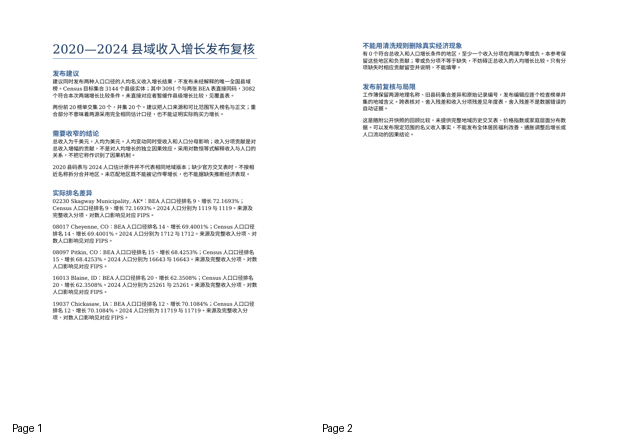
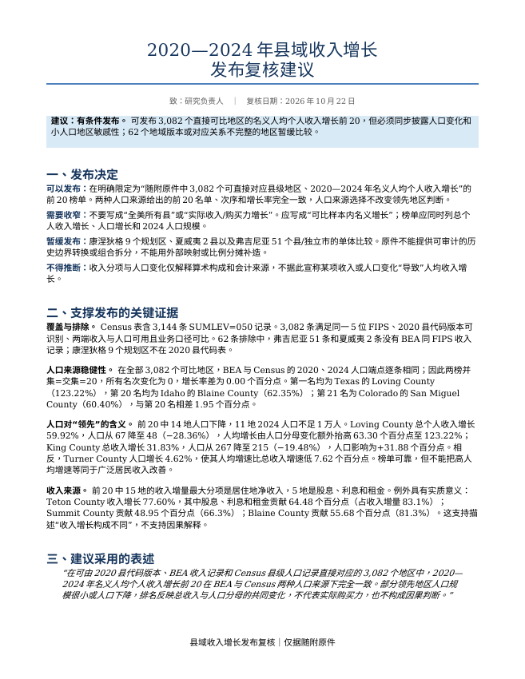
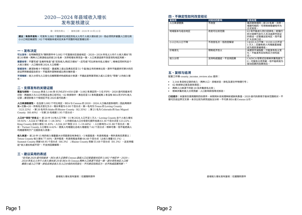
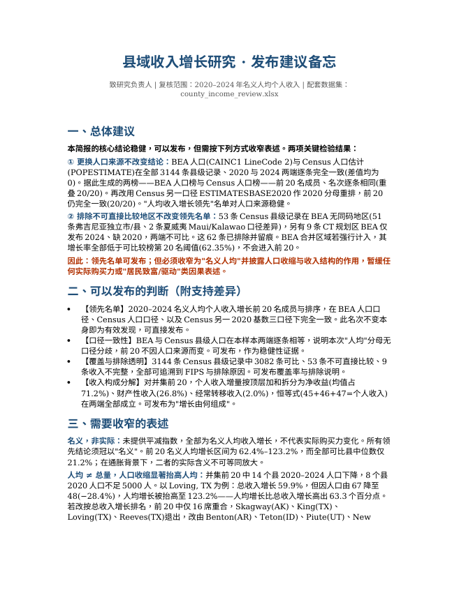
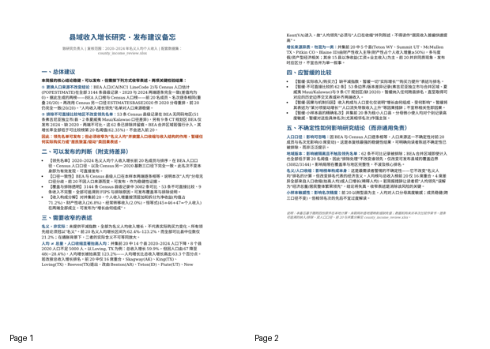

审阅草稿。输入隔离、参考复制入口及文档转换已通过；三模型解题、Gold评分与难度校准尚未完成。
县域收入增长研究的发布复核
你是区域经济研究组的数据分析负责人。团队准备发布2020至2024年县域收入变化简报，需要你先判断哪些地区可可靠比较，以及人口口径和地域版本差异会不会改变对增长领先地区的判断。请使用随附BEA收入、收入分项、Census人口和县代码原件完成分析。这是新拟研究委托，不代表这些机构已经认可本次比较。
研究负责人希望看到两个彼此关联的结果：一份足以复核的县域比较数据集，以及一份能够决定哪些结论可以发布、哪些应暂缓的说明。请关注实际业务影响：同一个“人均收入增长领先”的结论，在合理更换人口来源或处理无法直接比较的地区后是否仍成立；居民收入来源和人口变化分别解释了什么。
交付物
county_income_review.xlsx：2020、2024两端的可比县域数据、来源覆盖与无法直接比较的地区清单、收入构成和人口的核对，以及两种人口来源下名义人均收入增长的前20名与排名比较。每条被纳入或排除的记录都应可以追溯。针对两份榜单的并集，量化收入来源贡献和人口影响，并据实说明名次是否变化、变化是否影响结论；名次不变同样是有效发现。不以相关性宣称因果。
publication_memo.docx：给研究负责人的中文发布建议。明确建议发布哪些判断、收窄哪些表述、暂缓哪些比较，并用实际差异支持决定。说明不确定性对研究结论的影响，而不是只附通用免责声明。
范围与硬约束
使用 /app/input_files/ 的四份真实原件；不联网补造地理映射或缺失数值。比较以Census人口表中的县级记录为目标范围，无法直接对应的地区必须留有记录。名义收入不等于实际购买力；未提供平减指数，不要求估计实际收入。
排名按未四舍五入增长率降序、同值按FIPS升序。只有两端所需收入与人口有可用值且业务口径可比，才可参加对应排名；排除原因须明确。仅在 /app/output/ 提交上述两份文件，不修改输入。
题面附录：完整源文件清单
源文件清单
/app/input_files/ 下的相对路径 |
内容与口径 |
|---|---|
CAINC1__ALL_AREAS.csv |
BEA地区收入、人口及人均收入年度表；GeoFIPS、LineCode、单位及年份列见原件。 |
CAINC4__ALL_AREAS.csv |
BEA地区个人收入来源年度表；GeoFIPS、LineCode、单位及年份列见原件。 |
co-est2024-alldata.csv |
Census县级人口估计；SUMLEV、STATE、COUNTY、年份人口列见原件。 |
national_county2020.txt |
2020县代码表，供地区标识与版本范围核对；不替代历史边界交叉表。 |
输入原件 · 4 个
| 文件 | 字节 | SHA256 |
|---|---|---|
| CAINC1__ALL_AREAS.csv | 4,314,454 | 98c5ef2a2d3f72e482eac5bca0544ce3114375f8908226872b4f429d0e0f2028 |
| CAINC4__ALL_AREAS.csv | 29,012,947 | 61858e273cbd7dcfb2a9d374952cc65ef0f3cb4ce45eac5a7c851f291b6d0ceb |
| co-est2024-alldata.csv | 1,769,182 | abcc8720d669e793bbfdcd440eeec37a78db3b452adbe4ccd1eadf7c72b522b9 |
| national_county2020.txt | 126,639 | 9f6e5f6eb6ac2f5e9a36d5fd01dec77991bddc75118f748a069441a4782970d6 |
参考产物
county_income_review.xlsx
口径说明 · 10 行 × 2 列
| 事项 | 说明 |
| 目标范围 | Census人口原件SUMLEV=050的县级记录；不是仅凭5位代码判断县 |
| 直接比较 | Census县级代码同时具有BEA两表同码记录；地理实体内容和历史版本仍须审查，不暗示辖区从未变化 |
| 排名条件 | 两端总收入、两套人口为正且可用，两张收入表总额一致；收入分项可为零或负，不能据此删除县 |
| 单位 | BEA个人总收入及收入分项为千美元；重算人均收入乘1000转换美元 |
| 贡献 | 分项增量/2020总收入×100，单位百分点；允许负贡献，不是分项自身增长率 |
| 人口影响 | ln(末期人均/基期人均)=ln(末期收入/基期收入)-ln(末期人口/基期人口)，分别用两个人口来源 |
| 版本 | 保留2020代码表与当前人口原件集合差异，不用旧表否定当前人口原件，也不按名称补映射 |
| 记录编号 | CSV按解析记录计数，表头为1；不保证等于物理文本行号 |
| 名义口径 | 无平减指数，不推断实际购买力或因果关系 |
指标定义 · 8 行 × 5 列
| 表 | LineCode | 原始说明 | 单位 | 来源记录 |
| CAINC1 | 1 | Personal income (thousands of dollars) | Thousands of dollars | 2 |
| CAINC1 | 2 | Population (persons) 1/ | Number of persons | 3 |
| CAINC1 | 3 | Per capita personal income (dollars) 2/ | Dollars | 4 |
| CAINC4 | 10 | Personal income (thousands of dollars) | Thousands of dollars | 2 |
| CAINC4 | 45 | Equals: Net earnings by place of residence | Thousands of dollars | 12 |
| CAINC4 | 46 | Plus: Dividends, interest, and rent 7/ | Thousands of dollars | 13 |
| CAINC4 | 47 | Plus: Personal current transfer receipts | Thousands of dollars | 14 |
地域双向覆盖 · 3355 行 × 8 列
| FIPS | Census县 | BEA1 | BEA4 | 2020县码 | 直接匹配 | Census名称 | BEA名称 |
| 00000 | False | True | True | False | False | United States | |
| 01000 | False | True | True | False | False | Alabama | |
| 01001 | True | True | True | True | True | Autauga County | Autauga, AL |
| 01003 | True | True | True | True | True | Baldwin County | Baldwin, AL |
| 01005 | True | True | True | True | True | Barbour County | Barbour, AL |
| 01007 | True | True | True | True | True | Bibb County | Bibb, AL |
| 01009 | True | True | True | True | True | Blount County | Blount, AL |
| 01011 | True | True | True | True | True | Bullock County | Bullock, AL |
| 01013 | True | True | True | True | True | Butler County | Butler, AL |
| 01015 | True | True | True | True | True | Calhoun County | Calhoun, AL |
| 01017 | True | True | True | True | True | Chambers County | Chambers, AL |
| 01019 | True | True | True | True | True | Cherokee County | Cherokee, AL |
| 01021 | True | True | True | True | True | Chilton County | Chilton, AL |
| 01023 | True | True | True | True | True | Choctaw County | Choctaw, AL |
| 01025 | True | True | True | True | True | Clarke County | Clarke, AL |
| 01027 | True | True | True | True | True | Clay County | Clay, AL |
| 01029 | True | True | True | True | True | Cleburne County | Cleburne, AL |
| 01031 | True | True | True | True | True | Coffee County | Coffee, AL |
| 01033 | True | True | True | True | True | Colbert County | Colbert, AL |
| 01035 | True | True | True | True | True | Conecuh County | Conecuh, AL |
年度数值核对 · 15456 行 × 12 列
| FIPS | year | CAINC1总收入千USD | CAINC4总收入千USD | BEA人口 | Census人口 | 发布人均USD | BEA重算人均USD | Census重算人均USD | 发布值舍入残差USD | 收入分项残差千USD | 来源记录 |
| 01001 | 2020 | 2656173 | 2656173 | 58909 | 58909 | 45089 | 45089.42606392911 | 45089.42606392911 | -0.4260639291110017 | 0 | {"cainc1_income": 8, "cainc1_population": 9, "cainc1_pc": 10, "cainc4_income": 42, "census": 3, "cainc4_45": 52, "cainc4_46": 53, "cainc4_47": 54} |
| 01001 | 2021 | 2915364 | 2915364 | 59191 | 59191 | 49254 | 49253.50137689852 | 49253.50137689852 | 0.498623101485023 | 0 | {"cainc1_income": 8, "cainc1_population": 9, "cainc1_pc": 10, "cainc4_income": 42, "census": 3, "cainc4_45": 52, "cainc4_46": 53, "cainc4_47": 54} |
| 01001 | 2022 | 2979576 | 2979576 | 59736 | 59736 | 49879 | 49879.06789875452 | 49879.06789875452 | -0.0678987545198875 | 0 | {"cainc1_income": 8, "cainc1_population": 9, "cainc1_pc": 10, "cainc4_income": 42, "census": 3, "cainc4_45": 52, "cainc4_46": 53, "cainc4_47": 54} |
| 01001 | 2023 | 3202452 | 3202452 | 60436 | 60436 | 52989 | 52989.14554239195 | 52989.14554239195 | -0.1455423919518168 | 0 | {"cainc1_income": 8, "cainc1_population": 9, "cainc1_pc": 10, "cainc4_income": 42, "census": 3, "cainc4_45": 52, "cainc4_46": 53, "cainc4_47": 54} |
| 01001 | 2024 | 3424189 | 3424189 | 61464 | 61464 | 55710 | 55710.48093192763 | 55710.48093192763 | -0.4809319276324353 | 0 | {"cainc1_income": 8, "cainc1_population": 9, "cainc1_pc": 10, "cainc4_income": 42, "census": 3, "cainc4_45": 52, "cainc4_46": 53, "cainc4_47": 54} |
| 01003 | 2020 | 11880306 | 11880306 | 233244 | 233244 | 50935 | 50935.098008952 | 50935.098008952 | -0.09800895199876525 | 0 | {"cainc1_income": 11, "cainc1_population": 12, "cainc1_pc": 13, "cainc4_income": 62, "census": 4, "cainc4_45": 72, "cainc4_46": 73, "cainc4_47": 74} |
| 01003 | 2021 | 13527772 | 13527772 | 239411 | 239411 | 56504 | 56504.38785185309 | 56504.38785185309 | -0.387851853089457 | 0 | {"cainc1_income": 11, "cainc1_population": 12, "cainc1_pc": 13, "cainc4_income": 62, "census": 4, "cainc4_45": 72, "cainc4_46": 73, "cainc4_47": 74} |
| 01003 | 2022 | 14232715 | 14232715 | 246577 | 246577 | 57721 | 57721.17837430093 | 57721.17837430093 | -0.1783743009283104 | 0 | {"cainc1_income": 11, "cainc1_population": 12, "cainc1_pc": 13, "cainc4_income": 62, "census": 4, "cainc4_45": 72, "cainc4_46": 73, "cainc4_47": 74} |
| 01003 | 2023 | 15590410 | 15590410 | 254107 | 254107 | 61354 | 61353.7210702578 | 61353.7210702578 | 0.278929742195217 | 0 | {"cainc1_income": 11, "cainc1_population": 12, "cainc1_pc": 13, "cainc4_income": 62, "census": 4, "cainc4_45": 72, "cainc4_46": 73, "cainc4_47": 74} |
| 01003 | 2024 | 16718173 | 16718173 | 261608 | 261608 | 63905 | 63905.43484908719 | 63905.43484908719 | -0.4348490871838782 | 0 | {"cainc1_income": 11, "cainc1_population": 12, "cainc1_pc": 13, "cainc4_income": 62, "census": 4, "cainc4_45": 72, "cainc4_46": 73, "cainc4_47": 74} |
| 01005 | 2020 | 926313 | 926313 | 24975 | 24975 | 37090 | 37089.60960960961 | 37089.60960960961 | 0.3903903903903904 | 0 | {"cainc1_income": 14, "cainc1_population": 15, "cainc1_pc": 16, "cainc4_income": 82, "census": 5, "cainc4_45": 92, "cainc4_46": 93, "cainc4_47": 94} |
| 01005 | 2021 | 1006722 | 1006722 | 24517 | 24517 | 41062 | 41062.20173756985 | 41062.20173756985 | -0.2017375698494922 | 0 | {"cainc1_income": 14, "cainc1_population": 15, "cainc1_pc": 16, "cainc4_income": 82, "census": 5, "cainc4_45": 92, "cainc4_46": 93, "cainc4_47": 94} |
| 01005 | 2022 | 1014902 | 1014902 | 24722 | 24722 | 41053 | 41052.58474233477 | 41052.58474233477 | 0.4152576652374403 | 0 | {"cainc1_income": 14, "cainc1_population": 15, "cainc1_pc": 16, "cainc4_income": 82, "census": 5, "cainc4_45": 92, "cainc4_46": 93, "cainc4_47": 94} |
| 01005 | 2023 | 1033178 | 1033178 | 24644 | 24644 | 41924 | 41924.11946112644 | 41924.11946112644 | -0.1194611264405129 | 0 | {"cainc1_income": 14, "cainc1_population": 15, "cainc1_pc": 16, "cainc4_income": 82, "census": 5, "cainc4_45": 92, "cainc4_46": 93, "cainc4_47": 94} |
| 01005 | 2024 | 1093828 | 1093828 | 24358 | 24358 | 44906 | 44906.31414730274 | 44906.31414730274 | -0.3141473027342147 | 0 | {"cainc1_income": 14, "cainc1_population": 15, "cainc1_pc": 16, "cainc4_income": 82, "census": 5, "cainc4_45": 92, "cainc4_46": 93, "cainc4_47": 94} |
| 01007 | 2020 | 773029 | 773029 | 22176 | 22176 | 34859 | 34858.81132756133 | 34858.81132756133 | 0.1886724386724387 | 0 | {"cainc1_income": 17, "cainc1_population": 18, "cainc1_pc": 19, "cainc4_income": 102, "census": 6, "cainc4_45": 112, "cainc4_46": 113, "cainc4_47": 114} |
| 01007 | 2021 | 836565 | 836565 | 22344 | 22344 | 37440 | 37440.25241675618 | 37440.25241675618 | -0.2524167561761547 | 0 | {"cainc1_income": 17, "cainc1_population": 18, "cainc1_pc": 19, "cainc4_income": 102, "census": 6, "cainc4_45": 112, "cainc4_46": 113, "cainc4_47": 114} |
| 01007 | 2022 | 840465 | 840465 | 21983 | 21983 | 38232 | 38232.49783923941 | 38232.49783923941 | -0.4978392394122731 | 0 | {"cainc1_income": 17, "cainc1_population": 18, "cainc1_pc": 19, "cainc4_income": 102, "census": 6, "cainc4_45": 112, "cainc4_46": 113, "cainc4_47": 114} |
| 01007 | 2023 | 886174 | 886174 | 21890 | 21890 | 40483 | 40483.05162174509 | 40483.05162174509 | -0.05162174508908177 | 0 | {"cainc1_income": 17, "cainc1_population": 18, "cainc1_pc": 19, "cainc4_income": 102, "census": 6, "cainc4_45": 112, "cainc4_46": 113, "cainc4_47": 114} |
| 01007 | 2024 | 933750 | 933750 | 22258 | 22258 | 41951 | 41951.20855422769 | 41951.20855422769 | -0.2085542276934136 | 0 | {"cainc1_income": 17, "cainc1_population": 18, "cainc1_pc": 19, "cainc4_income": 102, "census": 6, "cainc4_45": 112, "cainc4_46": 113, "cainc4_47": 114} |
排除与未完成项 · 63 行 × 4 列
| FIPS | 类型 | 原因 | 来源记录 |
| 15005 | not_directly_comparable | 缺少BEA直接同码记录；不得按县名或自行拆分合并地区 | 564 |
| 15009 | not_directly_comparable | 缺少BEA直接同码记录；不得按县名或自行拆分合并地区 | 566 |
| 51003 | not_directly_comparable | 缺少BEA直接同码记录；不得按县名或自行拆分合并地区 | 2872 |
| 51005 | not_directly_comparable | 缺少BEA直接同码记录；不得按县名或自行拆分合并地区 | 2873 |
| 51015 | not_directly_comparable | 缺少BEA直接同码记录；不得按县名或自行拆分合并地区 | 2878 |
| 51031 | not_directly_comparable | 缺少BEA直接同码记录；不得按县名或自行拆分合并地区 | 2886 |
| 51035 | not_directly_comparable | 缺少BEA直接同码记录；不得按县名或自行拆分合并地区 | 2888 |
| 51053 | not_directly_comparable | 缺少BEA直接同码记录；不得按县名或自行拆分合并地区 | 2897 |
| 51059 | not_directly_comparable | 缺少BEA直接同码记录；不得按县名或自行拆分合并地区 | 2899 |
| 51069 | not_directly_comparable | 缺少BEA直接同码记录；不得按县名或自行拆分合并地区 | 2904 |
| 51081 | not_directly_comparable | 缺少BEA直接同码记录；不得按县名或自行拆分合并地区 | 2910 |
| 51089 | not_directly_comparable | 缺少BEA直接同码记录；不得按县名或自行拆分合并地区 | 2914 |
| 51095 | not_directly_comparable | 缺少BEA直接同码记录；不得按县名或自行拆分合并地区 | 2917 |
| 51121 | not_directly_comparable | 缺少BEA直接同码记录；不得按县名或自行拆分合并地区 | 2930 |
| 51143 | not_directly_comparable | 缺少BEA直接同码记录；不得按县名或自行拆分合并地区 | 2939 |
| 51149 | not_directly_comparable | 缺少BEA直接同码记录；不得按县名或自行拆分合并地区 | 2942 |
| 51153 | not_directly_comparable | 缺少BEA直接同码记录；不得按县名或自行拆分合并地区 | 2943 |
| 51161 | not_directly_comparable | 缺少BEA直接同码记录；不得按县名或自行拆分合并地区 | 2947 |
| 51163 | not_directly_comparable | 缺少BEA直接同码记录；不得按县名或自行拆分合并地区 | 2948 |
| 51165 | not_directly_comparable | 缺少BEA直接同码记录；不得按县名或自行拆分合并地区 | 2949 |
全部可比增长 · 3083 行 × 9 列
| FIPS | 名称 | 总收入增长百分比 | BEA人均增长百分比 | Census人均增长百分比 | BEA排名 | Census排名 | 非正分项 | 来源记录 |
| 01001 | Autauga, AL | 28.91438170631205 | 23.55553351453105 | 23.55553351453105 | 1028 | 1028 | False | {"cainc1_income": 8, "cainc1_population": 9, "cainc1_pc": 10, "cainc4_income": 42, "census": 3, "cainc4_45": 52, "cainc4_46": 53, "cainc4_47": 54} |
| 01003 | Baldwin, AL | 40.72173730205266 | 25.46443876058825 | 25.46443876058825 | 708 | 708 | False | {"cainc1_income": 11, "cainc1_population": 12, "cainc1_pc": 13, "cainc4_income": 62, "census": 4, "cainc4_45": 72, "cainc4_46": 73, "cainc4_47": 74} |
| 01005 | Barbour, AL | 18.08406013949928 | 21.07518687839702 | 21.07518687839702 | 1554 | 1554 | False | {"cainc1_income": 14, "cainc1_population": 15, "cainc1_pc": 16, "cainc4_income": 82, "census": 5, "cainc4_45": 92, "cainc4_46": 93, "cainc4_47": 94} |
| 01007 | Bibb, AL | 20.79106993398695 | 20.34606734010669 | 20.34606734010669 | 1712 | 1712 | False | {"cainc1_income": 17, "cainc1_population": 18, "cainc1_pc": 19, "cainc4_income": 102, "census": 6, "cainc4_45": 112, "cainc4_46": 113, "cainc4_47": 114} |
| 01009 | Blount, AL | 30.74453244895072 | 28.45618258825985 | 28.45618258825985 | 395 | 395 | False | {"cainc1_income": 20, "cainc1_population": 21, "cainc1_pc": 22, "cainc4_income": 122, "census": 7, "cainc4_45": 132, "cainc4_46": 133, "cainc4_47": 134} |
| 01011 | Bullock, AL | 23.9267233574857 | 28.04468032997462 | 28.04468032997462 | 424 | 424 | False | {"cainc1_income": 23, "cainc1_population": 24, "cainc1_pc": 25, "cainc4_income": 142, "census": 8, "cainc4_45": 152, "cainc4_46": 153, "cainc4_47": 154} |
| 01013 | Butler, AL | 29.45113663867737 | 34.91820644303868 | 34.91820644303868 | 125 | 125 | False | {"cainc1_income": 26, "cainc1_population": 27, "cainc1_pc": 28, "cainc4_income": 162, "census": 9, "cainc4_45": 172, "cainc4_46": 173, "cainc4_47": 174} |
| 01015 | Calhoun, AL | 19.73228466209683 | 19.54203263582726 | 19.54203263582726 | 1886 | 1886 | False | {"cainc1_income": 29, "cainc1_population": 30, "cainc1_pc": 31, "cainc4_income": 182, "census": 10, "cainc4_45": 192, "cainc4_46": 193, "cainc4_47": 194} |
| 01017 | Chambers, AL | 19.10730761430597 | 21.78090790056446 | 21.78090790056446 | 1413 | 1413 | False | {"cainc1_income": 32, "cainc1_population": 33, "cainc1_pc": 34, "cainc4_income": 202, "census": 11, "cainc4_45": 212, "cainc4_46": 213, "cainc4_47": 214} |
| 01019 | Cherokee, AL | 25.76768489954855 | 20.20057144676801 | 20.20057144676801 | 1743 | 1743 | False | {"cainc1_income": 35, "cainc1_population": 36, "cainc1_pc": 37, "cainc4_income": 222, "census": 12, "cainc4_45": 232, "cainc4_46": 233, "cainc4_47": 234} |
| 01021 | Chilton, AL | 31.83322314604582 | 25.69093637511795 | 25.69093637511795 | 665 | 665 | False | {"cainc1_income": 38, "cainc1_population": 39, "cainc1_pc": 40, "cainc4_income": 242, "census": 13, "cainc4_45": 252, "cainc4_46": 253, "cainc4_47": 254} |
| 01023 | Choctaw, AL | 15.82841567238015 | 21.30652693468156 | 21.30652693468156 | 1519 | 1519 | False | {"cainc1_income": 41, "cainc1_population": 42, "cainc1_pc": 43, "cainc4_income": 262, "census": 14, "cainc4_45": 272, "cainc4_46": 273, "cainc4_47": 274} |
| 01025 | Clarke, AL | 15.84803654277967 | 20.27958233592096 | 20.27958233592096 | 1727 | 1727 | False | {"cainc1_income": 44, "cainc1_population": 45, "cainc1_pc": 46, "cainc4_income": 282, "census": 15, "cainc4_45": 292, "cainc4_46": 293, "cainc4_47": 294} |
| 01027 | Clay, AL | 20.58729004551608 | 20.3416947501077 | 20.3416947501077 | 1716 | 1716 | False | {"cainc1_income": 47, "cainc1_population": 48, "cainc1_pc": 49, "cainc4_income": 302, "census": 16, "cainc4_45": 312, "cainc4_46": 313, "cainc4_47": 314} |
| 01029 | Cleburne, AL | 31.60353307482991 | 24.63653056939094 | 24.63653056939094 | 827 | 827 | False | {"cainc1_income": 50, "cainc1_population": 51, "cainc1_pc": 52, "cainc4_income": 322, "census": 17, "cainc4_45": 332, "cainc4_46": 333, "cainc4_47": 334} |
| 01031 | Coffee, AL | 32.34616614857678 | 25.78733080926425 | 25.78733080926425 | 652 | 652 | False | {"cainc1_income": 53, "cainc1_population": 54, "cainc1_pc": 55, "cainc4_income": 342, "census": 18, "cainc4_45": 352, "cainc4_46": 353, "cainc4_47": 354} |
| 01033 | Colbert, AL | 24.09369901530092 | 20.9694551683562 | 20.9694551683562 | 1572 | 1572 | False | {"cainc1_income": 56, "cainc1_population": 57, "cainc1_pc": 58, "cainc4_income": 362, "census": 19, "cainc4_45": 372, "cainc4_46": 373, "cainc4_47": 374} |
| 01035 | Conecuh, AL | 18.32923178937832 | 23.03726315591944 | 23.03726315591944 | 1127 | 1127 | False | {"cainc1_income": 59, "cainc1_population": 60, "cainc1_pc": 61, "cainc4_income": 382, "census": 20, "cainc4_45": 392, "cainc4_46": 393, "cainc4_47": 394} |
| 01037 | Coosa, AL | 22.0893299576231 | 22.67065122551967 | 22.67065122551967 | 1209 | 1209 | False | {"cainc1_income": 62, "cainc1_population": 63, "cainc1_pc": 64, "cainc4_income": 402, "census": 21, "cainc4_45": 412, "cainc4_46": 413, "cainc4_47": 414} |
| 01039 | Covington, AL | 25.3115112883452 | 24.53138505244499 | 24.53138505244499 | 835 | 835 | False | {"cainc1_income": 65, "cainc1_population": 66, "cainc1_pc": 67, "cainc4_income": 422, "census": 22, "cainc4_45": 432, "cainc4_46": 433, "cainc4_47": 434} |
两榜前20并集 · 21 行 × 7 列
| FIPS | 名称 | BEA排名 | Census排名 | BEA人均增长百分比 | Census人均增长百分比 | 来源记录 |
| 02230 | Skagway Municipality, AK* | 9 | 9 | 72.1692788102463 | 72.1692788102463 | {"cainc1_income": 293, "cainc1_population": 294, "cainc1_pc": 295, "cainc4_income": 1942, "census": 96, "cainc4_45": 1952, "cainc4_46": 1953, "cainc4_47": 1954} |
| 08017 | Cheyenne, CO | 14 | 14 | 69.40008290984778 | 69.40008290984778 | {"cainc1_income": 860, "cainc1_population": 861, "cainc1_pc": 862, "cainc4_income": 5722, "census": 262, "cainc4_45": 5732, "cainc4_46": 5733, "cainc4_47": 5734} |
| 08097 | Pitkin, CO | 15 | 15 | 68.42529816446579 | 68.42529816446579 | {"cainc1_income": 980, "cainc1_population": 981, "cainc1_pc": 982, "cainc4_income": 6522, "census": 302, "cainc4_45": 6532, "cainc4_46": 6533, "cainc4_47": 6534} |
| 16013 | Blaine, ID | 20 | 20 | 62.35081194055643 | 62.35081194055643 | {"cainc1_income": 1817, "cainc1_population": 1818, "cainc1_pc": 1819, "cainc4_income": 12102, "census": 574, "cainc4_45": 12112, "cainc4_46": 12113, "cainc4_47": 12114} |
| 19037 | Chickasaw, IA | 12 | 12 | 70.10844621463035 | 70.10844621463035 | {"cainc1_income": 2576, "cainc1_population": 2577, "cainc1_pc": 2578, "cainc4_income": 17162, "census": 827, "cainc4_45": 17172, "cainc4_46": 17173, "cainc4_47": 17174} |
| 19131 | Mitchell, IA | 11 | 11 | 70.12340999599539 | 70.12340999599539 | {"cainc1_income": 2717, "cainc1_population": 2718, "cainc1_pc": 2719, "cainc4_income": 18102, "census": 874, "cainc4_45": 18112, "cainc4_46": 18113, "cainc4_47": 18114} |
| 31099 | Kearney, NE | 19 | 19 | 63.01949455691933 | 63.01949455691933 | {"cainc1_income": 5300, "cainc1_population": 5301, "cainc1_pc": 5302, "cainc4_income": 35322, "census": 1735, "cainc4_45": 35332, "cainc4_46": 35333, "cainc4_47": 35334} |
| 31139 | Pierce, NE | 5 | 5 | 87.6733144570439 | 87.6733144570439 | {"cainc1_income": 5360, "cainc1_population": 5361, "cainc1_pc": 5362, "cainc4_income": 35722, "census": 1755, "cainc4_45": 35732, "cainc4_46": 35733, "cainc4_47": 35734} |
| 40147 | Washington, OK | 3 | 3 | 99.20310435603407 | 99.20310435603407 | {"cainc1_income": 6830, "cainc1_population": 6831, "cainc1_pc": 6832, "cainc4_income": 45522, "census": 2245, "cainc4_45": 45532, "cainc4_46": 45533, "cainc4_47": 45534} |
| 46079 | Lake, SD | 17 | 17 | 64.70389382935055 | 64.70389382935055 | {"cainc1_income": 7433, "cainc1_population": 7434, "cainc1_pc": 7435, "cainc4_income": 49542, "census": 2446, "cainc4_45": 49552, "cainc4_46": 49553, "cainc4_47": 49554} |
| 46125 | Turner, SD | 16 | 16 | 65.03895854368395 | 65.03895854368395 | {"cainc1_income": 7502, "cainc1_population": 7503, "cainc1_pc": 7504, "cainc4_income": 50002, "census": 2469, "cainc4_45": 50012, "cainc4_46": 50013, "cainc4_47": 50014} |
| 48033 | Borden, TX | 2 | 2 | 102.5876598395193 | 102.5876598395193 | {"cainc1_income": 7856, "cainc1_population": 7857, "cainc1_pc": 7858, "cainc4_income": 52362, "census": 2587, "cainc4_45": 52372, "cainc4_46": 52373, "cainc4_47": 52374} |
| 48101 | Cottle, TX | 4 | 4 | 94.47757713900285 | 94.47757713900285 | {"cainc1_income": 7958, "cainc1_population": 7959, "cainc1_pc": 7960, "cainc4_income": 53042, "census": 2621, "cainc4_45": 53052, "cainc4_46": 53053, "cainc4_47": 53054} |
| 48269 | King, TX | 18 | 18 | 63.71546649809564 | 63.71546649809564 | {"cainc1_income": 8210, "cainc1_population": 8211, "cainc1_pc": 8212, "cainc4_income": 54722, "census": 2705, "cainc4_45": 54732, "cainc4_46": 54733, "cainc4_47": 54734} |
| 48301 | Loving, TX | 1 | 1 | 123.2237239504681 | 123.2237239504681 | {"cainc1_income": 8258, "cainc1_population": 8259, "cainc1_pc": 8260, "cainc4_income": 55042, "census": 2721, "cainc4_45": 55052, "cainc4_46": 55053, "cainc4_47": 55054} |
| 48311 | McMullen, TX | 13 | 13 | 69.83811536800432 | 69.83811536800432 | {"cainc1_income": 8273, "cainc1_population": 8274, "cainc1_pc": 8275, "cainc4_income": 55142, "census": 2726, "cainc4_45": 55152, "cainc4_46": 55153, "cainc4_47": 55154} |
| 48389 | Reeves, TX | 6 | 6 | 82.43023379140949 | 82.43023379140949 | {"cainc1_income": 8390, "cainc1_population": 8391, "cainc1_pc": 8392, "cainc4_income": 55922, "census": 2765, "cainc4_45": 55932, "cainc4_46": 55933, "cainc4_47": 55934} |
| 48461 | Upton, TX | 8 | 8 | 74.94339846376897 | 74.94339846376897 | {"cainc1_income": 8498, "cainc1_population": 8499, "cainc1_pc": 8500, "cainc4_income": 56642, "census": 2801, "cainc4_45": 56652, "cainc4_46": 56653, "cainc4_47": 56654} |
| 49043 | Summit, UT | 10 | 10 | 71.27325531375607 | 71.27325531375607 | {"cainc1_income": 8636, "cainc1_population": 8637, "cainc1_pc": 8638, "cainc4_income": 57562, "census": 2847, "cainc4_45": 57572, "cainc4_46": 57573, "cainc4_47": 57574} |
| 56039 | Teton, WY | 7 | 7 | 78.45237894549079 | 78.45237894549079 | {"cainc1_income": 9593, "cainc1_population": 9594, "cainc1_pc": 9595, "cainc4_income": 63942, "census": 3193, "cainc4_45": 63952, "cainc4_46": 63953, "cainc4_47": 63954} |
增长来源与人口影响 · 21 行 × 8 列
| FIPS | 净劳动贡献pp | 财产收入贡献pp | 转移收入贡献pp | 收入log变化 | BEA人口log变化 | Census人口log变化 | 来源记录 |
| 02230 | 53.63604756275642 | 5.091440094569223 | -3.35859815033725 | 0.4406320356807911 | -0.1026759502871573 | -0.1026759502871573 | {"cainc1_income": 293, "cainc1_population": 294, "cainc1_pc": 295, "cainc4_income": 1942, "census": 96, "cainc4_45": 1952, "cainc4_46": 1953, "cainc4_47": 1954} |
| 08017 | 52.77038055149901 | 6.782676991421945 | 6.548283775326126 | 0.5074279059642781 | -0.01966517969786015 | -0.01966517969786015 | {"cainc1_income": 860, "cainc1_population": 861, "cainc1_pc": 862, "cainc4_income": 5722, "census": 262, "cainc4_45": 5732, "cainc4_46": 5733, "cainc4_47": 5734} |
| 08097 | 17.68042051454211 | 44.61933362578832 | -0.8772239156714028 | 0.4788551525756413 | -0.04246697859144789 | -0.04246697859144789 | {"cainc1_income": 980, "cainc1_population": 981, "cainc1_pc": 982, "cainc4_income": 6522, "census": 302, "cainc4_45": 6532, "cainc4_46": 6533, "cainc4_47": 6534} |
| 16013 | 11.98436192699292 | 55.6841722768484 | 0.7908562430839575 | 0.5215245285079502 | 0.03693521478595408 | 0.03693521478595408 | {"cainc1_income": 1817, "cainc1_population": 1818, "cainc1_pc": 1819, "cainc4_income": 12102, "census": 574, "cainc4_45": 12112, "cainc4_46": 12113, "cainc4_47": 12114} |
| 19037 | 57.06214440342019 | 6.898830661861248 | 2.37201460424322 | 0.508821554978101 | -0.02244441160988234 | -0.02244441160988234 | {"cainc1_income": 2576, "cainc1_population": 2577, "cainc1_pc": 2578, "cainc4_income": 17162, "census": 827, "cainc4_45": 17172, "cainc4_46": 17173, "cainc4_47": 17174} |
| 19131 | 61.06937555942093 | 6.871284504101466 | 2.921997699317486 | 0.5356898768224061 | 0.004335947975148477 | 0.004335947975148477 | {"cainc1_income": 2717, "cainc1_population": 2718, "cainc1_pc": 2719, "cainc4_income": 18102, "census": 874, "cainc4_45": 18112, "cainc4_46": 18113, "cainc4_47": 18114} |
| 31099 | 48.7725180914581 | 11.62594612032622 | 4.009570570739373 | 0.4971811688127389 | 0.008481562636691843 | 0.008481562636691843 | {"cainc1_income": 5300, "cainc1_population": 5301, "cainc1_pc": 5302, "cainc4_income": 35322, "census": 1735, "cainc4_45": 35332, "cainc4_46": 35333, "cainc4_47": 35334} |
| 31139 | 80.2892571350849 | 5.001246797996056 | 2.127264071815564 | 0.6281699925815908 | -0.001362583669055103 | -0.001362583669055103 | {"cainc1_income": 5360, "cainc1_population": 5361, "cainc1_pc": 5362, "cainc4_income": 35722, "census": 1755, "cainc4_45": 35732, "cainc4_46": 35733, "cainc4_47": 35734} |
| 40147 | 95.73343299839777 | 4.885141689603673 | 4.09039047732575 | 0.716419102326495 | 0.02726435916888266 | 0.02726435916888266 | {"cainc1_income": 6830, "cainc1_population": 6831, "cainc1_pc": 6832, "cainc4_income": 45522, "census": 2245, "cainc4_45": 45532, "cainc4_46": 45533, "cainc4_47": 45534} |
| 46079 | 50.26640453189946 | 10.96878562135151 | 3.319190337474526 | 0.4980709100783767 | -0.0009081827887866498 | -0.0009081827887866498 | {"cainc1_income": 7433, "cainc1_population": 7434, "cainc1_pc": 7435, "cainc4_income": 49542, "census": 2446, "cainc4_45": 49552, "cainc4_46": 49553, "cainc4_47": 49554} |
| 46125 | 62.78707442543678 | 6.38219408251169 | 3.488918953075697 | 0.5461436590288898 | 0.04513228660057984 | 0.04513228660057984 | {"cainc1_income": 7502, "cainc1_population": 7503, "cainc1_pc": 7504, "cainc4_income": 50002, "census": 2469, "cainc4_45": 50012, "cainc4_46": 50013, "cainc4_47": 50014} |
| 48033 | 56.91558441558441 | 19.56400742115028 | -0.7142857142857143 | 0.563979431223196 | -0.1420230637626771 | -0.1420230637626771 | {"cainc1_income": 7856, "cainc1_population": 7857, "cainc1_pc": 7858, "cainc4_income": 52362, "census": 2587, "cainc4_45": 52372, "cainc4_46": 52373, "cainc4_47": 52374} |
| 48101 | 78.52264381884945 | -0.5030599755201959 | 2.057527539779682 | 0.5882149697393332 | -0.07693171605291635 | -0.07693171605291635 | {"cainc1_income": 7958, "cainc1_population": 7959, "cainc1_pc": 7960, "cainc4_income": 53042, "census": 2621, "cainc4_45": 53052, "cainc4_46": 53053, "cainc4_47": 53054} |
| 48269 | 33.10112461867686 | 0.2731867231252561 | -1.543504985657697 | 0.2763491443992364 | -0.2166106302725868 | -0.2166106302725868 | {"cainc1_income": 8210, "cainc1_population": 8211, "cainc1_pc": 8212, "cainc4_income": 54722, "census": 2705, "cainc4_45": 54732, "cainc4_46": 54733, "cainc4_47": 54734} |
| 48301 | 46.1038961038961 | 13.25883418906675 | 0.558743581999396 | 0.4695127204882606 | -0.3334916084830752 | -0.3334916084830752 | {"cainc1_income": 8258, "cainc1_population": 8259, "cainc1_pc": 8260, "cainc4_income": 55042, "census": 2721, "cainc4_45": 55052, "cainc4_46": 55053, "cainc4_47": 55054} |
| 48311 | 17.46807542106902 | 40.07043772011787 | 3.196051654328087 | 0.4745841525848404 | -0.05509138224616111 | -0.05509138224616111 | {"cainc1_income": 8273, "cainc1_population": 8274, "cainc1_pc": 8275, "cainc4_income": 55142, "census": 2726, "cainc4_45": 55152, "cainc4_46": 55153, "cainc4_47": 55154} |
| 48389 | 39.17523377044084 | 8.2992319749444 | 0.2189169205202291 | 0.3899682000127794 | -0.211229433338805 | -0.211229433338805 | {"cainc1_income": 8390, "cainc1_population": 8391, "cainc1_pc": 8392, "cainc4_income": 55922, "census": 2765, "cainc4_45": 55932, "cainc4_46": 55933, "cainc4_47": 55934} |
| 48461 | 59.93568351434985 | 4.72941293279865 | 1.009426833102581 | 0.5048549745428024 | -0.05443732372558792 | -0.05443732372558792 | {"cainc1_income": 8498, "cainc1_population": 8499, "cainc1_pc": 8500, "cainc4_income": 56642, "census": 2801, "cainc4_45": 56652, "cainc4_46": 56653, "cainc4_47": 56654} |
| 49043 | 24.0215287109361 | 48.94621415175011 | 0.8210946875247013 | 0.5526707989475543 | 0.01458071956036025 | 0.01458071956036025 | {"cainc1_income": 8636, "cainc1_population": 8637, "cainc1_pc": 8638, "cainc4_income": 57562, "census": 2847, "cainc4_45": 57572, "cainc4_46": 57573, "cainc4_47": 57574} |
| 56039 | 13.13049411896117 | 64.48352328178221 | -0.01635392060901886 | 0.5743504884031118 | -0.004801106616044265 | -0.004801106616044265 | {"cainc1_income": 9593, "cainc1_population": 9594, "cainc1_pc": 9595, "cainc4_income": 63942, "census": 3193, "cainc4_45": 63952, "cainc4_46": 63953, "cainc4_47": 63954} |
负或零分项仍有效 · 1 行 × 4 列
| FIPS | 名称 | 两端数据 | 原因 |
脚注原文 · 9 行 × 3 列
| 文件 | 来源记录 | 原文字段 |
| CAINC1 | 9629 | {"GeoFIPS": "Note: See the included footnote file.", "GeoName": null, "Region": null, "TableName": null, "LineCode": null, "IndustryClassification": null, "Description": null, "Unit": null, "1969": null, "1970": null, "1971": null, "1972": null, "1973": null, "1974": null, "1975": null, "1976": null, "1977": null, "1978": null, "1979": null, "1980": null, "1981": null, "1982": null, "1983": null, "1984": null, "1985": null, "1986": null, "1987": null, "1988": null, "1989": null, "1990": null, "1991": null, "1992": null, "1993": null, "1994": null, "1995": null, "1996": null, "1997": null, "1998": null, "1999": null, "2000": null, "2001": null, "2002": null, "2003": null, "2004": null, "2005": null, "2006": null, "2007": null, "2008": null, "2009": null, "2010": null, "2011": null, "2012": null, "2013": null, "2014": null, "2015": null, "2016": null, "2017": null, "2018": null, "2019": null, "2020": null, "2021": null, "2022": null, "2023": null, "2024": null, "record": 9629} |
| CAINC1 | 9630 | {"GeoFIPS": "CAINC1: County personal income summary: personal income, population, per capita personal income ", "GeoName": null, "Region": null, "TableName": null, "LineCode": null, "IndustryClassification": null, "Description": null, "Unit": null, "1969": null, "1970": null, "1971": null, "1972": null, "1973": null, "1974": null, "1975": null, "1976": null, "1977": null, "1978": null, "1979": null, "1980": null, "1981": null, "1982": null, "1983": null, "1984": null, "1985": null, "1986": null, "1987": null, "1988": null, "1989": null, "1990": null, "1991": null, "1992": null, "1993": null, "1994": null, "1995": null, "1996": null, "1997": null, "1998": null, "1999": null, "2000": null, "2001": null, "2002": null, "2003": null, "2004": null, "2005": null, "2006": null, "2007": null, "2008": null, "2009": null, "2010": null, "2011": null, "2012": null, "2013": null, "2014": null, "2015": null, "2016": null, "2017": null, "2018": null, "2019": null, "2020": null, "2021": null, "2022": null, "2023": null, "2024": null, "record": 9630} |
| CAINC1 | 9631 | {"GeoFIPS": "Last updated: February 5, 2026-- new statistics for 2024; revised statistics for 2020-2023.", "GeoName": null, "Region": null, "TableName": null, "LineCode": null, "IndustryClassification": null, "Description": null, "Unit": null, "1969": null, "1970": null, "1971": null, "1972": null, "1973": null, "1974": null, "1975": null, "1976": null, "1977": null, "1978": null, "1979": null, "1980": null, "1981": null, "1982": null, "1983": null, "1984": null, "1985": null, "1986": null, "1987": null, "1988": null, "1989": null, "1990": null, "1991": null, "1992": null, "1993": null, "1994": null, "1995": null, "1996": null, "1997": null, "1998": null, "1999": null, "2000": null, "2001": null, "2002": null, "2003": null, "2004": null, "2005": null, "2006": null, "2007": null, "2008": null, "2009": null, "2010": null, "2011": null, "2012": null, "2013": null, "2014": null, "2015": null, "2016": null, "2017": null, "2018": null, "2019": null, "2020": null, "2021": null, "2022": null, "2023": null, "2024": null, "record": 9631} |
| CAINC1 | 9632 | {"GeoFIPS": "U.S. Bureau of Economic Analysis", "GeoName": null, "Region": null, "TableName": null, "LineCode": null, "IndustryClassification": null, "Description": null, "Unit": null, "1969": null, "1970": null, "1971": null, "1972": null, "1973": null, "1974": null, "1975": null, "1976": null, "1977": null, "1978": null, "1979": null, "1980": null, "1981": null, "1982": null, "1983": null, "1984": null, "1985": null, "1986": null, "1987": null, "1988": null, "1989": null, "1990": null, "1991": null, "1992": null, "1993": null, "1994": null, "1995": null, "1996": null, "1997": null, "1998": null, "1999": null, "2000": null, "2001": null, "2002": null, "2003": null, "2004": null, "2005": null, "2006": null, "2007": null, "2008": null, "2009": null, "2010": null, "2011": null, "2012": null, "2013": null, "2014": null, "2015": null, "2016": null, "2017": null, "2018": null, "2019": null, "2020": null, "2021": null, "2022": null, "2023": null, "2024": null, "record": 9632} |
| CAINC4 | 64182 | {"GeoFIPS": "Note: See the included footnote file.", "GeoName": null, "Region": null, "TableName": null, "LineCode": null, "IndustryClassification": null, "Description": null, "Unit": null, "1969": null, "1970": null, "1971": null, "1972": null, "1973": null, "1974": null, "1975": null, "1976": null, "1977": null, "1978": null, "1979": null, "1980": null, "1981": null, "1982": null, "1983": null, "1984": null, "1985": null, "1986": null, "1987": null, "1988": null, "1989": null, "1990": null, "1991": null, "1992": null, "1993": null, "1994": null, "1995": null, "1996": null, "1997": null, "1998": null, "1999": null, "2000": null, "2001": null, "2002": null, "2003": null, "2004": null, "2005": null, "2006": null, "2007": null, "2008": null, "2009": null, "2010": null, "2011": null, "2012": null, "2013": null, "2014": null, "2015": null, "2016": null, "2017": null, "2018": null, "2019": null, "2020": null, "2021": null, "2022": null, "2023": null, "2024": null, "record": 64182} |
| CAINC4 | 64183 | {"GeoFIPS": "CAINC4: Personal income by major component ", "GeoName": null, "Region": null, "TableName": null, "LineCode": null, "IndustryClassification": null, "Description": null, "Unit": null, "1969": null, "1970": null, "1971": null, "1972": null, "1973": null, "1974": null, "1975": null, "1976": null, "1977": null, "1978": null, "1979": null, "1980": null, "1981": null, "1982": null, "1983": null, "1984": null, "1985": null, "1986": null, "1987": null, "1988": null, "1989": null, "1990": null, "1991": null, "1992": null, "1993": null, "1994": null, "1995": null, "1996": null, "1997": null, "1998": null, "1999": null, "2000": null, "2001": null, "2002": null, "2003": null, "2004": null, "2005": null, "2006": null, "2007": null, "2008": null, "2009": null, "2010": null, "2011": null, "2012": null, "2013": null, "2014": null, "2015": null, "2016": null, "2017": null, "2018": null, "2019": null, "2020": null, "2021": null, "2022": null, "2023": null, "2024": null, "record": 64183} |
| CAINC4 | 64184 | {"GeoFIPS": "Last updated: February 5, 2026-- new statistics for 2024; revised statistics for 2020-2023.", "GeoName": null, "Region": null, "TableName": null, "LineCode": null, "IndustryClassification": null, "Description": null, "Unit": null, "1969": null, "1970": null, "1971": null, "1972": null, "1973": null, "1974": null, "1975": null, "1976": null, "1977": null, "1978": null, "1979": null, "1980": null, "1981": null, "1982": null, "1983": null, "1984": null, "1985": null, "1986": null, "1987": null, "1988": null, "1989": null, "1990": null, "1991": null, "1992": null, "1993": null, "1994": null, "1995": null, "1996": null, "1997": null, "1998": null, "1999": null, "2000": null, "2001": null, "2002": null, "2003": null, "2004": null, "2005": null, "2006": null, "2007": null, "2008": null, "2009": null, "2010": null, "2011": null, "2012": null, "2013": null, "2014": null, "2015": null, "2016": null, "2017": null, "2018": null, "2019": null, "2020": null, "2021": null, "2022": null, "2023": null, "2024": null, "record": 64184} |
| CAINC4 | 64185 | {"GeoFIPS": "U.S. Bureau of Economic Analysis", "GeoName": null, "Region": null, "TableName": null, "LineCode": null, "IndustryClassification": null, "Description": null, "Unit": null, "1969": null, "1970": null, "1971": null, "1972": null, "1973": null, "1974": null, "1975": null, "1976": null, "1977": null, "1978": null, "1979": null, "1980": null, "1981": null, "1982": null, "1983": null, "1984": null, "1985": null, "1986": null, "1987": null, "1988": null, "1989": null, "1990": null, "1991": null, "1992": null, "1993": null, "1994": null, "1995": null, "1996": null, "1997": null, "1998": null, "1999": null, "2000": null, "2001": null, "2002": null, "2003": null, "2004": null, "2005": null, "2006": null, "2007": null, "2008": null, "2009": null, "2010": null, "2011": null, "2012": null, "2013": null, "2014": null, "2015": null, "2016": null, "2017": null, "2018": null, "2019": null, "2020": null, "2021": null, "2022": null, "2023": null, "2024": null, "record": 64185} |
publication_memo.docx
完整正文
2020—2024 县域收入增长发布复核 发布建议 建议同时发布两种人口口径的人均名义收入增长结果，不发布未经解释的唯一全国县域 榜。Census 目标集合3144 个县级实体；其中3091 个与两张BEA 表直接同码，3082 个符合本次两端增长比较条件。未直接对应者暂缓作县级增长比较，见覆盖表。 两份前20 榜单交集20 个，并集20 个。建议把人口来源和可比范围写入榜名与正文；重 合部分不意味着两源采用完全相同估计口径，也不能证明实际购买力增长。 需要收窄的结论 总收入为千美元，人均为美元。人均变动同时受收入和人口分母影响；收入分项贡献是对 总收入增幅的贡献，不是对人均增长的独立因果效应。采用对数恒等式解释收入与人口的 关系，不把它称作识别了因果机制。 2020 县码表与2024 人口估计原件并不代表相同地域版本；缺少官方交叉表时，不按相 近名称拆分合并地区。未匹配地区既不能被记作零增长，也不能据缺失推断经济表现。 实际排名差异 02230 Skagway Municipality, AK*：BEA 人口口径排名9、增长72.1693%； Census 人口口径排名9、增长72.1693%。2024 人口分别为1119 与1119。来源及 完整收入分项、对数人口影响见对应FIPS。 08017 Cheyenne, CO：BEA 人口口径排名14、增长69.4001%；Census 人口口径 排名14、增长69.4001%。2024 人口分别为1712 与1712。来源及完整收入分项、对 数人口影响见对应FIPS。 08097 Pitkin, CO：BEA 人口口径排名15、增长68.4253%；Census 人口口径排名 15、增长68.4253%。2024 人口分别为16643 与16643。来源及完整收入分项、对数 人口影响见对应FIPS。 16013 Blaine, ID：BEA 人口口径排名20、增长62.3508%；Census 人口口径排名 20、增长62.3508%。2024 人口分别为25261 与25261。来源及完整收入分项、对数 人口影响见对应FIPS。 19037 Chickasaw, IA：BEA 人口口径排名12、增长70.1084%；Census 人口口径 排名12、增长70.1084%。2024 人口分别为11719 与11719。来源及完整收入分 项、对数人口影响见对应FIPS。 不能用清洗规则删除真实经济现象 有0 个符合总收入和人口增长条件的地区，至少一个收入分项在两端为零或负。本参考保 留这些地区和负贡献；零或负分项不等于缺失，不妨碍正总收入的人均增长比较。只有分 项缺失时相应贡献留空并说明，不能填零。 发布前复核与局限 工作簿保留两源地理名称、旧县码集合差异和原始记录编号，发布编辑应逐个检查榜单并 集的地域含义。跨表核对、舍入残差和收入分项残差见年度表，舍入残差不是数据错误的 自动证据。 这是随附公开快照的回顾比较，未提供完整地域历史交叉表、价格指数或家庭层面分布数 据。可以发布限定范围的名义收入事实，不能发布全体居民福利改善、通胀调整后增长或 人口流动的因果结论。
全部页面

模型产物与评分
未使用历史版本的分数。
gpt-5.6-sol
数值与结论复核 · 非正式评分
Run: 20261022T204433Z-gpt-5.6-sol-DA-1023-001
Snapshot: 2186e947e8a88063. The companion observation JSON binds the input and output hashes, and this note's hash. No judge was called for this review.
Verified scope
audit_da_gpt_output.py independently reads the four frozen originals. It does not import the reference builder or use its saved results. It recomputes target eligibility, endpoint values, both growth measures and rankings, exclusions, ordered top-20 lists, income component changes/contributions, and source row numbers in the inspected sheets. All 62,651 checks passed.
This covers the target dataset and selected contribution/provenance fields. It does not cover every cell in every summary sheet, all Word claims, historical geographic compatibility, visual presentation, or the full rubric.
Substantive observations
The memo explicitly restricts publication to 3,082 directly comparable regions. It warns against calling this all US counties, excludes 62 regions, and explains why the provided files cannot justify fabricated splits or geographic substitutions. Unlike the reviewed Qwen memo, the inspected text does not broaden the population equality claim to all 3,144 target records.
The memo's uncertainty section is a Word table, not an empty section: paragraph-only extraction would miss its substantive publication decisions. The table distinguishes population-source robustness, geography restrictions, small-population interpretation, price-level limitations, and accounting versus causal conclusions.
Additional workbook readbacks confirm the memo's specific counts: all 3,082 eligible rows have identical BEA/Census population endpoints; 14 of the top 20 have declining population; 11 have 2024 population under 10,000; the largest income-change component is resident net earnings in 15 cases and dividends/interest/rent in five. Rank 21 is San Miguel County, Colorado, with unrounded nominal per-capita growth of 0.6040474207758311. These readbacks are consistent with the reviewed memo, but do not independently approve every other narrative assertion.
Income contributions use fractional growth values formatted as percentages. Differences from a reference storing percentage-point numbers must be interpreted with the displayed formats and definitions; representation alone is not a substantive error.
Implication for task calibration
No score, Gold approval, weakness label, or A difficulty level is assigned here. Within the inspected scope, this GPT result appears materially stronger than the reviewed Qwen result. A strict difficulty requirement cannot be met by inventing failures or penalizing equivalent mathematics. Await full criterion-level external scoring and the third model; if the measured mean fails the difficulty requirement, revise the task transparently as a new version and rerun the required evidence rather than carrying old scores forward.
使用说明 · 13 行 × 2 列
| 县域收入增长发布复核 | |
| 用途 | 复核2020—2024年县级地区名义人均个人收入增长；本工作簿是新拟研究委托，不代表BEA或Census认可本次比较。 |
| 目标范围 | Census人口表 SUMLEV=050 的3,144条县级记录。所有记录见“县域比较”；不能直接比较的62条见“排除清单”。 |
| 可比样本 | 3,082条。要求：Census目标记录可在2020县代码表直接找到；BEA CAINC1具有同一5位FIPS；2020/2024收入及相应人口均可用且人口为正。未使用外部映射，也未拆分/合并地域。 |
| 增长定义 | 名义人均收入增长 = [(2024个人收入×1000/2024人口) ÷ (2020个人收入×1000/2020人口)] − 1。个人收入来自CAINC1 LineCode 1，BEA人口来自LineCode 2；Census人口来自POPESTIMATE2020/2024。 |
| 排序规则 | 按未四舍五入增长率降序；同值按5位FIPS升序。显示值仅为格式化结果，不参与排序。 |
| 收入构成 | CAINC4恒等式：个人收入(Line 10)=居住地净收入(Line 45)+股息利息租金(Line 46)+个人经常转移收入(Line 47)。贡献百分点=分项金额变化÷2020个人收入；三项之和等于个人收入增长率。该分解是会计分解，不是因果估计。 |
| 人口影响 | 人口影响百分点=实际人均增长率−总个人收入增长率，即以2020人口不变为反事实的精确差值（包含收入与人口的交互）。负人口增长可机械性抬高人均增速，但不证明人口变化导致收入变化。 |
| 地域版本 | 2020县代码表只用于标识及版本范围核对，不是历史边界交叉表。9个康涅狄格规划区不在该版本；BEA将Maui+Kalawao及若干Virginia县/独立市组合发布，故不做推算。 |
| 价格口径 | 全部为名义值。未提供平减指数，不能解释为实际购买力增长。 |
| 溯源方式 | 各明细表保留原文件物理行号（表头为第1行）。输入原件未修改；BEA尾部4行脚注不是数据记录。 |
| 关键发现 | 两种人口来源在全部3,082个可比地区的2020与2024端点完全一致，因此前20名单、次序和增长率均完全一致。前20中14地人口下降，11地2024人口不足1万人；应披露规模敏感性。 |
来源覆盖 · 8 行 × 8 列
| 来源覆盖与口径核验 | |||||||
| 记录数均由随附原件计算；BEA的3209个5位代码包括州、地区、历史/组合地区等，不等同于当前县级目标总体。 | |||||||
| 来源 | 原文件 | 筛选/匹配口径 | 源中5位FIPS记录数 | 覆盖检验 | 覆盖数 | 未覆盖数 | 说明 |
| Census人口 | co-est2024-alldata.csv | SUMLEV=050 | 3144 | 2020/2024人口端点均有效 | 3144 | 0 | 目标总体 |
| 2020县代码 | national_county2020.txt | 5位FIPS直接匹配 | 3235 | 目标总体中直接匹配 | 3135 | 9 | 9个CT规划区不在2020版 |
| BEA收入 | CAINC1__ALL_AREAS.csv | LineCode 1；5位FIPS直接匹配 | 3209 | 目标总体中直接匹配 | 3091 | 53 | 53地无同FIPS；不采用组合地区替代 |
| BEA人口 | CAINC1__ALL_AREAS.csv | LineCode 2；5位FIPS直接匹配 | 3209 | 可比样本端点有效 | 3082 | 0 | 与Census可比样本端点完全一致 |
| BEA收入分项 | CAINC4__ALL_AREAS.csv | LineCode 10/45/46/47 | 3209 | 榜单并集端点及恒等式有效 | 20 | 0 | 并集为20地 |
县域比较 · 3147 行 × 24 列
| 县域比较：目标总体全记录 | |||||||||||||||
| 范围为Census SUMLEV=050；空值表示源中无可用直接对应。排名按未四舍五入增长率，显示值不参与排序。 | |||||||||||||||
| FIPS | 州 | 县级地区 | Census源行 | 2020代码源行 | BEA收入源行 | BEA人口源行 | 收入2020(千美元) | 收入2024(千美元) | BEA人口2020 | BEA人口2024 | Census人口2020 | Census人口2024 | 总收入增长 | BEA人均2020(美元) | BEA人均2024(美元) |
| 01001 | Alabama | Autauga County | 3 | 2 | 8 | 9 | 2656173 | 3424189 | 58909 | 61464 | 58909 | 61464 | 0.2891438170631204 | 45089.42606392911 | 55710.48093192763 |
| 01003 | Alabama | Baldwin County | 4 | 3 | 11 | 12 | 11880306 | 16718173 | 233244 | 261608 | 233244 | 261608 | 0.4072173730205266 | 50935.098008952 | 63905.43484908719 |
| 01005 | Alabama | Barbour County | 5 | 4 | 14 | 15 | 926313 | 1093828 | 24975 | 24358 | 24975 | 24358 | 0.1808406013949928 | 37089.60960960961 | 44906.31414730274 |
| 01007 | Alabama | Bibb County | 6 | 5 | 17 | 18 | 773029 | 933750 | 22176 | 22258 | 22176 | 22258 | 0.2079106993398696 | 34858.81132756133 | 41951.20855422769 |
| 01009 | Alabama | Blount County | 7 | 6 | 20 | 21 | 2233724 | 2920472 | 59110 | 60163 | 59110 | 60163 | 0.3074453244895072 | 37789.27423447809 | 48542.65910941941 |
| 01011 | Alabama | Bullock County | 8 | 7 | 23 | 24 | 314807 | 390130 | 10230 | 9901 | 10230 | 9901 | 0.2392672335748569 | 30772.92277614858 | 39403.0905969094 |
| 01013 | Alabama | Butler County | 9 | 8 | 26 | 27 | 751954 | 973413 | 19027 | 18256 | 19027 | 18256 | 0.2945113663867736 | 39520.36579597414 | 53320.16871165644 |
| 01015 | Alabama | Calhoun County | 10 | 9 | 29 | 30 | 4602650 | 5510858 | 116242 | 116427 | 116242 | 116427 | 0.1973228466209684 | 39595.41301767003 | 47333.16155187371 |
| 01017 | Alabama | Chambers County | 11 | 10 | 32 | 33 | 1247507 | 1485872 | 34572 | 33813 | 34572 | 33813 | 0.1910730761430597 | 36084.31678815226 | 43943.80859432762 |
| 01019 | Alabama | Cherokee County | 12 | 11 | 35 | 36 | 997447 | 1254466 | 24981 | 26138 | 24981 | 26138 | 0.2576768489954855 | 39928.22545134302 | 47993.95516106817 |
| 01021 | Alabama | Chilton County | 13 | 12 | 38 | 39 | 1727362 | 2277237 | 45060 | 47262 | 45060 | 47262 | 0.3183322314604582 | 38334.7092765202 | 48183.25504633744 |
| 01023 | Alabama | Choctaw County | 14 | 13 | 41 | 42 | 511422 | 592372 | 12622 | 12052 | 12622 | 12052 | 0.1582841567238016 | 40518.30137854539 | 49151.34417524062 |
| 01025 | Alabama | Clarke County | 15 | 14 | 44 | 45 | 948149 | 1098412 | 22989 | 22142 | 22989 | 22142 | 0.1584803654277966 | 41243.5947627126 | 49607.62352091049 |
| 01027 | Alabama | Clay County | 16 | 15 | 47 | 48 | 497846 | 600339 | 14210 | 14239 | 14210 | 14239 | 0.2058729004551609 | 35034.90499648135 | 42161.59842685582 |
| 01029 | Alabama | Cleburne County | 17 | 16 | 50 | 51 | 570721 | 751089 | 15063 | 15905 | 15063 | 15905 | 0.316035330748299 | 37888.93314744739 | 47223.45174473436 |
| 01031 | Alabama | Coffee County | 18 | 17 | 53 | 54 | 2419786 | 3202494 | 53565 | 56358 | 53565 | 56358 | 0.3234616614857677 | 45174.7596378232 | 56824.12434791866 |
| 01033 | Alabama | Colbert County | 19 | 18 | 56 | 57 | 2313194 | 2870528 | 57305 | 58785 | 57305 | 58785 | 0.2409369901530092 | 40366.35546636419 | 48830.96027898273 |
| 01035 | Alabama | Conecuh County | 20 | 19 | 59 | 60 | 428294 | 506797 | 11551 | 11109 | 11551 | 11109 | 0.1832923178937833 | 37078.52134014371 | 45620.39787559636 |
排除清单 · 65 行 × 10 列
| 无法直接比较的地区（62条） | |||||||||
| 其中Virginia 51条、Hawaii 2条无BEA同FIPS；Connecticut 9个规划区不在2020县代码版本。 | |||||||||
| FIPS | 州 | 县级地区 | Census源行 | 2020代码是否匹配 | 2020代码源行 | BEA同FIPS收入是否匹配 | BEA收入源行 | 排除原因 | 处置 |
| 09110 | Connecticut | Capitol Planning Region | 318 | 否 | 是 | 1052 | 不在2020县代码表，地域版本不可直接比较；BEA收入端点缺失；BEA人口端点缺失或非正 | 不参加两种人口口径的排名；不推算、不拆分、不合并 | |
| 09120 | Connecticut | Greater Bridgeport Planning Region | 319 | 否 | 是 | 1055 | 不在2020县代码表，地域版本不可直接比较；BEA收入端点缺失；BEA人口端点缺失或非正 | 不参加两种人口口径的排名；不推算、不拆分、不合并 | |
| 09130 | Connecticut | Lower Connecticut River Valley Planning Region | 320 | 否 | 是 | 1058 | 不在2020县代码表，地域版本不可直接比较；BEA收入端点缺失；BEA人口端点缺失或非正 | 不参加两种人口口径的排名；不推算、不拆分、不合并 | |
| 09140 | Connecticut | Naugatuck Valley Planning Region | 321 | 否 | 是 | 1061 | 不在2020县代码表，地域版本不可直接比较；BEA收入端点缺失；BEA人口端点缺失或非正 | 不参加两种人口口径的排名；不推算、不拆分、不合并 | |
| 09150 | Connecticut | Northeastern Connecticut Planning Region | 322 | 否 | 是 | 1064 | 不在2020县代码表，地域版本不可直接比较；BEA收入端点缺失；BEA人口端点缺失或非正 | 不参加两种人口口径的排名；不推算、不拆分、不合并 | |
| 09160 | Connecticut | Northwest Hills Planning Region | 323 | 否 | 是 | 1067 | 不在2020县代码表，地域版本不可直接比较；BEA收入端点缺失；BEA人口端点缺失或非正 | 不参加两种人口口径的排名；不推算、不拆分、不合并 | |
| 09170 | Connecticut | South Central Connecticut Planning Region | 324 | 否 | 是 | 1070 | 不在2020县代码表，地域版本不可直接比较；BEA收入端点缺失；BEA人口端点缺失或非正 | 不参加两种人口口径的排名；不推算、不拆分、不合并 | |
| 09180 | Connecticut | Southeastern Connecticut Planning Region | 325 | 否 | 是 | 1073 | 不在2020县代码表，地域版本不可直接比较；BEA收入端点缺失；BEA人口端点缺失或非正 | 不参加两种人口口径的排名；不推算、不拆分、不合并 | |
| 09190 | Connecticut | Western Connecticut Planning Region | 326 | 否 | 是 | 1076 | 不在2020县代码表，地域版本不可直接比较；BEA收入端点缺失；BEA人口端点缺失或非正 | 不参加两种人口口径的排名；不推算、不拆分、不合并 | |
| 15005 | Hawaii | Kalawao County | 564 | 是 | 551 | 否 | BEA无同FIPS收入记录；BEA人口端点缺失或非正 | 不参加两种人口口径的排名；不推算、不拆分、不合并 | |
| 15009 | Hawaii | Maui County | 566 | 是 | 553 | 否 | BEA无同FIPS收入记录；BEA人口端点缺失或非正 | 不参加两种人口口径的排名；不推算、不拆分、不合并 | |
| 51003 | Virginia | Albemarle County | 2872 | 是 | 2824 | 否 | BEA无同FIPS收入记录；BEA人口端点缺失或非正 | 不参加两种人口口径的排名；不推算、不拆分、不合并 | |
| 51005 | Virginia | Alleghany County | 2873 | 是 | 2825 | 否 | BEA无同FIPS收入记录；BEA人口端点缺失或非正 | 不参加两种人口口径的排名；不推算、不拆分、不合并 | |
| 51015 | Virginia | Augusta County | 2878 | 是 | 2830 | 否 | BEA无同FIPS收入记录；BEA人口端点缺失或非正 | 不参加两种人口口径的排名；不推算、不拆分、不合并 | |
| 51031 | Virginia | Campbell County | 2886 | 是 | 2838 | 否 | BEA无同FIPS收入记录；BEA人口端点缺失或非正 | 不参加两种人口口径的排名；不推算、不拆分、不合并 | |
| 51035 | Virginia | Carroll County | 2888 | 是 | 2840 | 否 | BEA无同FIPS收入记录；BEA人口端点缺失或非正 | 不参加两种人口口径的排名；不推算、不拆分、不合并 | |
| 51053 | Virginia | Dinwiddie County | 2897 | 是 | 2849 | 否 | BEA无同FIPS收入记录；BEA人口端点缺失或非正 | 不参加两种人口口径的排名；不推算、不拆分、不合并 | |
| 51059 | Virginia | Fairfax County | 2899 | 是 | 2851 | 否 | BEA无同FIPS收入记录；BEA人口端点缺失或非正 | 不参加两种人口口径的排名；不推算、不拆分、不合并 |
前20_BEA人口 · 23 行 × 16 列
| 前20：BEA人口 | |||||||||||||||
| 分母为CAINC1 LineCode 2；完整资格记录及排除原因见“县域比较”。 | |||||||||||||||
| 名次 | FIPS | 州 | 县级地区 | 收入2020(千美元) | 收入2024(千美元) | 人口2020 | 人口2024 | 人均收入2020(美元) | 人均收入2024(美元) | 名义人均增长 | 总收入增长 | 人口增长 | Census源行 | BEA收入源行 | 人口源行 |
| 1 | 48301 | Texas | Loving County | 6622 | 10590 | 67 | 48 | 98835.82089552238 | 220625 | 1.232237239504681 | 0.5992147387496225 | -0.2835820895522388 | 2721 | 8258 | 8259 |
| 2 | 48033 | Texas | Borden County | 43120 | 75790 | 642 | 557 | 67165.10903426791 | 136068.2226211849 | 1.025876598395193 | 0.7576530612244898 | -0.132398753894081 | 2587 | 7856 | 7857 |
| 3 | 40147 | Oklahoma | Washington County | 3347211 | 6852041 | 52606 | 54060 | 63627.93217503707 | 126748.8161302257 | 0.992031043560341 | 1.047089651653272 | 0.02763943276432346 | 2245 | 6830 | 6831 |
| 4 | 48101 | Texas | Cottle County | 81700 | 147123 | 1364 | 1263 | 59897.36070381232 | 116486.9358669834 | 0.9447757713900284 | 0.8007711138310893 | -0.07404692082111441 | 2621 | 7958 | 7959 |
| 5 | 31139 | Nebraska | Pierce County | 441130 | 826756 | 7344 | 7334 | 60066.7211328976 | 112729.2064357786 | 0.8767331445704392 | 0.8741776800489651 | -0.001361655773420511 | 1755 | 5360 | 5361 |
| 6 | 48389 | Texas | Reeves County | 688389 | 1016705 | 14768 | 11956 | 46613.55633802817 | 85037.21980595517 | 0.8243023379140952 | 0.4769338266590546 | -0.1904117009750813 | 2765 | 8390 | 8391 |
| 7 | 56039 | Wyoming | Teton County | 6983035 | 12401707 | 23384 | 23272 | 298624.4868286008 | 532902.5008594019 | 0.784523789454908 | 0.7759766348013435 | -0.004789599726308547 | 3193 | 9593 | 9594 |
| 8 | 48461 | Texas | Upton County | 181291 | 300353 | 3303 | 3128 | 54886.76960339086 | 96020.7800511509 | 0.7494339846376896 | 0.656745232802511 | -0.05298213745080227 | 2801 | 8498 | 8499 |
| 9 | 02230 | Alaska | Skagway Municipality | 71905 | 111718 | 1240 | 1119 | 57987.90322580645 | 99837.35478105451 | 0.7216927881024628 | 0.553688895069884 | -0.09758064516129028 | 96 | 293 | 294 |
| 10 | 49043 | Utah | Summit County | 6958150 | 12092488 | 42485 | 43109 | 163778.9808167588 | 280509.591964555 | 0.7127325531375608 | 0.7378883755021091 | 0.01468753677768619 | 2847 | 8636 | 8637 |
| 11 | 19131 | Iowa | Mitchell County | 611123 | 1044181 | 10586 | 10632 | 57729.35953145664 | 98211.15500376222 | 0.7012340999599538 | 0.7086265776283989 | 0.00434536179860201 | 874 | 2717 | 2718 |
| 12 | 19037 | Iowa | Chickasaw County | 680898 | 1132558 | 11985 | 11719 | 56812.51564455569 | 96642.88761839748 | 0.7010844621463035 | 0.6633298966952466 | -0.02219440967876507 | 827 | 2576 | 2577 |
| 13 | 48311 | Texas | McMullen County | 41739 | 67089 | 597 | 565 | 69914.57286432161 | 118741.592920354 | 0.6983811536800433 | 0.6073456479551498 | -0.05360134003350081 | 2726 | 8273 | 8274 |
| 14 | 08017 | Colorado | Cheyenne County | 81487 | 135351 | 1746 | 1712 | 46670.67583046964 | 79060.16355140187 | 0.694000829098478 | 0.6610134131824708 | -0.01947308132875147 | 262 | 860 | 861 |
| 15 | 08097 | Colorado | Pitkin County | 2835764 | 4577562 | 17365 | 16643 | 163303.4264324791 | 275044.282881692 | 0.6842529816446579 | 0.6142253022465904 | -0.04157788655341199 | 302 | 980 | 981 |
| 16 | 46125 | South Dakota | Turner County | 482671 | 833371 | 8686 | 9087 | 55568.84641952567 | 91710.24540552437 | 0.6503895854368393 | 0.7265818746102417 | 0.04616624453142992 | 2469 | 7502 | 7503 |
| 17 | 46079 | South Dakota | Lake County | 694808 | 1143337 | 11016 | 11006 | 63072.62164124909 | 103883.0637833909 | 0.6470389382935056 | 0.645543804907255 | -0.0009077705156136373 | 2446 | 7433 | 7434 |
| 18 | 48269 | Texas | King County | 21963 | 28954 | 267 | 215 | 82258.42696629213 | 134669.7674418605 | 0.6371546649809563 | 0.3183080635614441 | -0.1947565543071161 | 2705 | 8210 | 8211 |
前20_Census人口 · 23 行 × 16 列
| 前20：Census人口 | |||||||||||||||
| 分母为Census POPESTIMATE2020/2024；完整资格记录及排除原因见“县域比较”。 | |||||||||||||||
| 名次 | FIPS | 州 | 县级地区 | 收入2020(千美元) | 收入2024(千美元) | 人口2020 | 人口2024 | 人均收入2020(美元) | 人均收入2024(美元) | 名义人均增长 | 总收入增长 | 人口增长 | Census源行 | BEA收入源行 | 人口源行 |
| 1 | 48301 | Texas | Loving County | 6622 | 10590 | 67 | 48 | 98835.82089552238 | 220625 | 1.232237239504681 | 0.5992147387496225 | -0.2835820895522388 | 2721 | 8258 | 2721 |
| 2 | 48033 | Texas | Borden County | 43120 | 75790 | 642 | 557 | 67165.10903426791 | 136068.2226211849 | 1.025876598395193 | 0.7576530612244898 | -0.132398753894081 | 2587 | 7856 | 2587 |
| 3 | 40147 | Oklahoma | Washington County | 3347211 | 6852041 | 52606 | 54060 | 63627.93217503707 | 126748.8161302257 | 0.992031043560341 | 1.047089651653272 | 0.02763943276432346 | 2245 | 6830 | 2245 |
| 4 | 48101 | Texas | Cottle County | 81700 | 147123 | 1364 | 1263 | 59897.36070381232 | 116486.9358669834 | 0.9447757713900284 | 0.8007711138310893 | -0.07404692082111441 | 2621 | 7958 | 2621 |
| 5 | 31139 | Nebraska | Pierce County | 441130 | 826756 | 7344 | 7334 | 60066.7211328976 | 112729.2064357786 | 0.8767331445704392 | 0.8741776800489651 | -0.001361655773420511 | 1755 | 5360 | 1755 |
| 6 | 48389 | Texas | Reeves County | 688389 | 1016705 | 14768 | 11956 | 46613.55633802817 | 85037.21980595517 | 0.8243023379140952 | 0.4769338266590546 | -0.1904117009750813 | 2765 | 8390 | 2765 |
| 7 | 56039 | Wyoming | Teton County | 6983035 | 12401707 | 23384 | 23272 | 298624.4868286008 | 532902.5008594019 | 0.784523789454908 | 0.7759766348013435 | -0.004789599726308547 | 3193 | 9593 | 3193 |
| 8 | 48461 | Texas | Upton County | 181291 | 300353 | 3303 | 3128 | 54886.76960339086 | 96020.7800511509 | 0.7494339846376896 | 0.656745232802511 | -0.05298213745080227 | 2801 | 8498 | 2801 |
| 9 | 02230 | Alaska | Skagway Municipality | 71905 | 111718 | 1240 | 1119 | 57987.90322580645 | 99837.35478105451 | 0.7216927881024628 | 0.553688895069884 | -0.09758064516129028 | 96 | 293 | 96 |
| 10 | 49043 | Utah | Summit County | 6958150 | 12092488 | 42485 | 43109 | 163778.9808167588 | 280509.591964555 | 0.7127325531375608 | 0.7378883755021091 | 0.01468753677768619 | 2847 | 8636 | 2847 |
| 11 | 19131 | Iowa | Mitchell County | 611123 | 1044181 | 10586 | 10632 | 57729.35953145664 | 98211.15500376222 | 0.7012340999599538 | 0.7086265776283989 | 0.00434536179860201 | 874 | 2717 | 874 |
| 12 | 19037 | Iowa | Chickasaw County | 680898 | 1132558 | 11985 | 11719 | 56812.51564455569 | 96642.88761839748 | 0.7010844621463035 | 0.6633298966952466 | -0.02219440967876507 | 827 | 2576 | 827 |
| 13 | 48311 | Texas | McMullen County | 41739 | 67089 | 597 | 565 | 69914.57286432161 | 118741.592920354 | 0.6983811536800433 | 0.6073456479551498 | -0.05360134003350081 | 2726 | 8273 | 2726 |
| 14 | 08017 | Colorado | Cheyenne County | 81487 | 135351 | 1746 | 1712 | 46670.67583046964 | 79060.16355140187 | 0.694000829098478 | 0.6610134131824708 | -0.01947308132875147 | 262 | 860 | 262 |
| 15 | 08097 | Colorado | Pitkin County | 2835764 | 4577562 | 17365 | 16643 | 163303.4264324791 | 275044.282881692 | 0.6842529816446579 | 0.6142253022465904 | -0.04157788655341199 | 302 | 980 | 302 |
| 16 | 46125 | South Dakota | Turner County | 482671 | 833371 | 8686 | 9087 | 55568.84641952567 | 91710.24540552437 | 0.6503895854368393 | 0.7265818746102417 | 0.04616624453142992 | 2469 | 7502 | 2469 |
| 17 | 46079 | South Dakota | Lake County | 694808 | 1143337 | 11016 | 11006 | 63072.62164124909 | 103883.0637833909 | 0.6470389382935056 | 0.645543804907255 | -0.0009077705156136373 | 2446 | 7433 | 2446 |
| 18 | 48269 | Texas | King County | 21963 | 28954 | 267 | 215 | 82258.42696629213 | 134669.7674418605 | 0.6371546649809563 | 0.3183080635614441 | -0.1947565543071161 | 2705 | 8210 | 2705 |
排名比较 · 23 行 × 14 列
| 两种人口来源下的排名比较 | |||||||||||||
| 两榜并集为20地、交集也是20地；名次变化全部为0，增长差和人口增长差全部为0.00个百分点。 | |||||||||||||
| FIPS | 州 | 县级地区 | BEA人口名次 | Census人口名次 | 名次变化(Census-BEA) | BEA口径增长 | Census口径增长 | 增长差(百分点) | BEA人口增长 | Census人口增长 | 人口增长差(百分点) | 是否影响前20结论 | 说明 |
| 48301 | Texas | Loving County | 1 | 1 | 0 | 1.232237239504681 | 1.232237239504681 | 0 | -0.2835820895522388 | -0.2835820895522388 | 0 | 否 | 两种人口源端点相同，增长率与名次均不变 |
| 48033 | Texas | Borden County | 2 | 2 | 0 | 1.025876598395193 | 1.025876598395193 | 0 | -0.132398753894081 | -0.132398753894081 | 0 | 否 | 两种人口源端点相同，增长率与名次均不变 |
| 40147 | Oklahoma | Washington County | 3 | 3 | 0 | 0.992031043560341 | 0.992031043560341 | 0 | 0.02763943276432346 | 0.02763943276432346 | 0 | 否 | 两种人口源端点相同，增长率与名次均不变 |
| 48101 | Texas | Cottle County | 4 | 4 | 0 | 0.9447757713900284 | 0.9447757713900284 | 0 | -0.07404692082111441 | -0.07404692082111441 | 0 | 否 | 两种人口源端点相同，增长率与名次均不变 |
| 31139 | Nebraska | Pierce County | 5 | 5 | 0 | 0.8767331445704392 | 0.8767331445704392 | 0 | -0.001361655773420511 | -0.001361655773420511 | 0 | 否 | 两种人口源端点相同，增长率与名次均不变 |
| 48389 | Texas | Reeves County | 6 | 6 | 0 | 0.8243023379140952 | 0.8243023379140952 | 0 | -0.1904117009750813 | -0.1904117009750813 | 0 | 否 | 两种人口源端点相同，增长率与名次均不变 |
| 56039 | Wyoming | Teton County | 7 | 7 | 0 | 0.784523789454908 | 0.784523789454908 | 0 | -0.004789599726308547 | -0.004789599726308547 | 0 | 否 | 两种人口源端点相同，增长率与名次均不变 |
| 48461 | Texas | Upton County | 8 | 8 | 0 | 0.7494339846376896 | 0.7494339846376896 | 0 | -0.05298213745080227 | -0.05298213745080227 | 0 | 否 | 两种人口源端点相同，增长率与名次均不变 |
| 02230 | Alaska | Skagway Municipality | 9 | 9 | 0 | 0.7216927881024628 | 0.7216927881024628 | 0 | -0.09758064516129028 | -0.09758064516129028 | 0 | 否 | 两种人口源端点相同，增长率与名次均不变 |
| 49043 | Utah | Summit County | 10 | 10 | 0 | 0.7127325531375608 | 0.7127325531375608 | 0 | 0.01468753677768619 | 0.01468753677768619 | 0 | 否 | 两种人口源端点相同，增长率与名次均不变 |
| 19131 | Iowa | Mitchell County | 11 | 11 | 0 | 0.7012340999599538 | 0.7012340999599538 | 0 | 0.00434536179860201 | 0.00434536179860201 | 0 | 否 | 两种人口源端点相同，增长率与名次均不变 |
| 19037 | Iowa | Chickasaw County | 12 | 12 | 0 | 0.7010844621463035 | 0.7010844621463035 | 0 | -0.02219440967876507 | -0.02219440967876507 | 0 | 否 | 两种人口源端点相同，增长率与名次均不变 |
| 48311 | Texas | McMullen County | 13 | 13 | 0 | 0.6983811536800433 | 0.6983811536800433 | 0 | -0.05360134003350081 | -0.05360134003350081 | 0 | 否 | 两种人口源端点相同，增长率与名次均不变 |
| 08017 | Colorado | Cheyenne County | 14 | 14 | 0 | 0.694000829098478 | 0.694000829098478 | 0 | -0.01947308132875147 | -0.01947308132875147 | 0 | 否 | 两种人口源端点相同，增长率与名次均不变 |
| 08097 | Colorado | Pitkin County | 15 | 15 | 0 | 0.6842529816446579 | 0.6842529816446579 | 0 | -0.04157788655341199 | -0.04157788655341199 | 0 | 否 | 两种人口源端点相同，增长率与名次均不变 |
| 46125 | South Dakota | Turner County | 16 | 16 | 0 | 0.6503895854368393 | 0.6503895854368393 | 0 | 0.04616624453142992 | 0.04616624453142992 | 0 | 否 | 两种人口源端点相同，增长率与名次均不变 |
| 46079 | South Dakota | Lake County | 17 | 17 | 0 | 0.6470389382935056 | 0.6470389382935056 | 0 | -0.0009077705156136373 | -0.0009077705156136373 | 0 | 否 | 两种人口源端点相同，增长率与名次均不变 |
| 48269 | Texas | King County | 18 | 18 | 0 | 0.6371546649809563 | 0.6371546649809563 | 0 | -0.1947565543071161 | -0.1947565543071161 | 0 | 否 | 两种人口源端点相同，增长率与名次均不变 |
收入构成_榜单并集 · 23 行 × 22 列
| 榜单并集的收入来源贡献 | |||||||||||||||
| 金额单位为千美元；贡献百分点=分项变化÷2020个人收入；三项贡献百分点之和=个人收入增长率。 | |||||||||||||||
| FIPS | 州 | 县级地区 | 榜单名次 | 个人收入2020 | 个人收入2024 | 个人收入增长 | 居住地净收入变化 | 其贡献百分点 | 占收入增量比重 | 股息利息租金变化 | 其贡献百分点 | 占收入增量比重 | 转移收入变化 | 其贡献百分点 | 占收入增量比重 |
| 48301 | Texas | Loving County | 1 | 6622 | 10590 | 0.5992147387496225 | 3053 | 0.461038961038961 | 0.7694052419354839 | 878 | 0.1325883418906675 | 0.2212701612903226 | 37 | 0.00558743581999396 | 0.009324596774193549 |
| 48033 | Texas | Borden County | 2 | 43120 | 75790 | 0.7576530612244898 | 24542 | 0.5691558441558442 | 0.7512090602999694 | 8436 | 0.1956400742115028 | 0.25821854912764 | -308 | -0.007142857142857143 | -0.009427609427609427 |
| 40147 | Oklahoma | Washington County | 3 | 3347211 | 6852041 | 1.047089651653272 | 3204400 | 0.9573343299839777 | 0.9142811491570204 | 163516 | 0.04885141689603673 | 0.04665447396878022 | 136914 | 0.0409039047732575 | 0.03906437687419932 |
| 48101 | Texas | Cottle County | 4 | 81700 | 147123 | 0.8007711138310893 | 64153 | 0.7852264381884945 | 0.9805878666524005 | -411 | -0.005030599755201958 | -0.006282194335325497 | 1681 | 0.02057527539779682 | 0.02569432768292497 |
| 31139 | Nebraska | Pierce County | 5 | 441130 | 826756 | 0.8741776800489651 | 354180 | 0.8028925713508489 | 0.9184546685130152 | 22062 | 0.05001246797996056 | 0.05721087271086493 | 9384 | 0.02127264071815564 | 0.02433445877611987 |
| 48389 | Texas | Reeves County | 6 | 688389 | 1016705 | 0.4769338266590546 | 269678 | 0.3917523377044084 | 0.8213976778469523 | 57131 | 0.08299231974944399 | 0.1740122321178377 | 1507 | 0.002189169205202291 | 0.004590090035209981 |
| 56039 | Wyoming | Teton County | 7 | 6983035 | 12401707 | 0.7759766348013435 | 916907 | 0.1313049411896117 | 0.1692124933932152 | 4502907 | 0.6448352328178221 | 0.8309982593521069 | -1142 | -0.0001635392060901886 | -0.0002107527453221011 |
| 48461 | Texas | Upton County | 8 | 181291 | 300353 | 0.656745232802511 | 108658 | 0.5993568351434986 | 0.9126169558717306 | 8574 | 0.0472941293279865 | 0.07201290084157834 | 1830 | 0.01009426833102581 | 0.01537014328669097 |
| 02230 | Alaska | Skagway Municipality | 9 | 71905 | 111718 | 0.553688895069884 | 38567 | 0.5363604756275642 | 0.9687036897495793 | 3661 | 0.05091440094569223 | 0.09195488910657323 | -2415 | -0.0335859815033725 | -0.06065857885615251 |
| 49043 | Utah | Summit County | 10 | 6958150 | 12092488 | 0.7378883755021091 | 1671454 | 0.240215287109361 | 0.3255442084257016 | 3405751 | 0.4894621415175011 | 0.6633281642151335 | 57133 | 0.008210946875247012 | 0.0111276273591649 |
| 19131 | Iowa | Mitchell County | 11 | 611123 | 1044181 | 0.7086265776283989 | 373209 | 0.6106937555942094 | 0.8617991123590836 | 41992 | 0.06871284504101466 | 0.09696622623297572 | 17857 | 0.02921997699317486 | 0.04123466140794074 |
| 19037 | Iowa | Chickasaw County | 12 | 680898 | 1132558 | 0.6633298966952466 | 388535 | 0.5706214440342019 | 0.8602377894876677 | 46974 | 0.06898830661861248 | 0.1040030111145552 | 16151 | 0.0237201460424322 | 0.03575919939777709 |
| 48311 | Texas | McMullen County | 13 | 41739 | 67089 | 0.6073456479551498 | 7291 | 0.1746807542106902 | 0.2876134122287968 | 16725 | 0.4007043772011787 | 0.6597633136094675 | 1334 | 0.03196051654328087 | 0.0526232741617357 |
| 08017 | Colorado | Cheyenne County | 14 | 81487 | 135351 | 0.6610134131824708 | 43001 | 0.5277038055149901 | 0.7983254121491163 | 5527 | 0.06782676991421945 | 0.1026102777365216 | 5336 | 0.06548283775326126 | 0.09906431011436209 |
| 08097 | Colorado | Pitkin County | 15 | 2835764 | 4577562 | 0.6142253022465904 | 501375 | 0.1768042051454211 | 0.2878491076462368 | 1265299 | 0.4461933362578832 | 0.726432686224235 | -24876 | -0.008772239156714028 | -0.01428179387047178 |
| 46125 | South Dakota | Turner County | 16 | 482671 | 833371 | 0.7265818746102417 | 303055 | 0.6278707442543678 | 0.8641431422868548 | 30805 | 0.0638219408251169 | 0.08783860849729114 | 16840 | 0.03488918953075697 | 0.04801824921585401 |
| 46079 | South Dakota | Lake County | 17 | 694808 | 1143337 | 0.645543804907255 | 349255 | 0.5026640453189946 | 0.7786676000882886 | 76212 | 0.1096878562135151 | 0.1699154346764646 | 23062 | 0.03319190337474525 | 0.05141696523524678 |
| 48269 | Texas | King County | 18 | 21963 | 28954 | 0.3183080635614441 | 7270 | 0.3310112461867686 | 1.039908453726219 | 60 | 0.002731867231252561 | 0.008582463166928908 | -339 | -0.01543504985657697 | -0.04849091689314834 |
人口核对_榜单并集 · 23 行 × 16 列
| 榜单并集的人口核对与人口影响 | |||||||||||||||
| 人口影响百分点=人均增长率−总收入增长率；两种人口源端点完全一致，故这里只列一组数值。 | |||||||||||||||
| FIPS | 州 | 县级地区 | 榜单名次 | 人口2020 | 人口2024 | 人口变化(人) | 人口增长 | 总收入增长 | 名义人均增长 | 人口影响(百分点) | 2024人口<1万 | 人口下降 | 对结论的实际含义 | BEA人口源行 | Census源行 |
| 48301 | Texas | Loving County | 1 | 67 | 48 | -19 | -0.2835820895522388 | 0.5992147387496225 | 1.232237239504681 | 63.3022500755059 | 是 | 是 | 人口下降机械性抬高人均增速；应同时披露总收入增长与人口变化 | 8259 | 2721 |
| 48033 | Texas | Borden County | 2 | 642 | 557 | -85 | -0.132398753894081 | 0.7576530612244898 | 1.025876598395193 | 26.82235371707034 | 是 | 是 | 人口下降机械性抬高人均增速；应同时披露总收入增长与人口变化 | 7857 | 2587 |
| 40147 | Oklahoma | Washington County | 3 | 52606 | 54060 | 1454 | 0.02763943276432346 | 1.047089651653272 | 0.992031043560341 | -5.505860809293095 | 否 | 否 | 人口增长压低相对于总收入增长的人均增速；不改变其前20入榜 | 6831 | 2245 |
| 48101 | Texas | Cottle County | 4 | 1364 | 1263 | -101 | -0.07404692082111441 | 0.8007711138310893 | 0.9447757713900284 | 14.40046575589391 | 是 | 是 | 人口下降机械性抬高人均增速；应同时披露总收入增长与人口变化 | 7959 | 2621 |
| 31139 | Nebraska | Pierce County | 5 | 7344 | 7334 | -10 | -0.001361655773420511 | 0.8741776800489651 | 0.8767331445704392 | 0.2555464521474038 | 是 | 是 | 人口下降机械性抬高人均增速；应同时披露总收入增长与人口变化 | 5361 | 1755 |
| 48389 | Texas | Reeves County | 6 | 14768 | 11956 | -2812 | -0.1904117009750813 | 0.4769338266590546 | 0.8243023379140952 | 34.73685112550407 | 否 | 是 | 人口下降机械性抬高人均增速；应同时披露总收入增长与人口变化 | 8391 | 2765 |
| 56039 | Wyoming | Teton County | 7 | 23384 | 23272 | -112 | -0.004789599726308547 | 0.7759766348013435 | 0.784523789454908 | 0.8547154653564482 | 否 | 是 | 人口下降机械性抬高人均增速；应同时披露总收入增长与人口变化 | 9594 | 3193 |
| 48461 | Texas | Upton County | 8 | 3303 | 3128 | -175 | -0.05298213745080227 | 0.656745232802511 | 0.7494339846376896 | 9.268875183517867 | 是 | 是 | 人口下降机械性抬高人均增速；应同时披露总收入增长与人口变化 | 8499 | 2801 |
| 02230 | Alaska | Skagway Municipality | 9 | 1240 | 1119 | -121 | -0.09758064516129028 | 0.553688895069884 | 0.7216927881024628 | 16.80038930325789 | 是 | 是 | 人口下降机械性抬高人均增速；应同时披露总收入增长与人口变化 | 294 | 96 |
| 49043 | Utah | Summit County | 10 | 42485 | 43109 | 624 | 0.01468753677768619 | 0.7378883755021091 | 0.7127325531375608 | -2.515582236454827 | 否 | 否 | 人口增长压低相对于总收入增长的人均增速；不改变其前20入榜 | 8637 | 2847 |
| 19131 | Iowa | Mitchell County | 11 | 10586 | 10632 | 46 | 0.00434536179860201 | 0.7086265776283989 | 0.7012340999599538 | -0.7392477668445085 | 否 | 否 | 人口增长压低相对于总收入增长的人均增速；不改变其前20入榜 | 2718 | 874 |
| 19037 | Iowa | Chickasaw County | 12 | 11985 | 11719 | -266 | -0.02219440967876507 | 0.6633298966952466 | 0.7010844621463035 | 3.775456545105693 | 否 | 是 | 人口下降机械性抬高人均增速；应同时披露总收入增长与人口变化 | 2577 | 827 |
| 48311 | Texas | McMullen County | 13 | 597 | 565 | -32 | -0.05360134003350081 | 0.6073456479551498 | 0.6983811536800433 | 9.10355057248935 | 是 | 是 | 人口下降机械性抬高人均增速；应同时披露总收入增长与人口变化 | 8274 | 2726 |
| 08017 | Colorado | Cheyenne County | 14 | 1746 | 1712 | -34 | -0.01947308132875147 | 0.6610134131824708 | 0.694000829098478 | 3.298741591600729 | 是 | 是 | 人口下降机械性抬高人均增速；应同时披露总收入增长与人口变化 | 861 | 262 |
| 08097 | Colorado | Pitkin County | 15 | 17365 | 16643 | -722 | -0.04157788655341199 | 0.6142253022465904 | 0.6842529816446579 | 7.002767939806742 | 否 | 是 | 人口下降机械性抬高人均增速；应同时披露总收入增长与人口变化 | 981 | 302 |
| 46125 | South Dakota | Turner County | 16 | 8686 | 9087 | 401 | 0.04616624453142992 | 0.7265818746102417 | 0.6503895854368393 | -7.619228917340237 | 是 | 否 | 人口增长压低相对于总收入增长的人均增速；不改变其前20入榜 | 7503 | 2469 |
| 46079 | South Dakota | Lake County | 17 | 11016 | 11006 | -10 | -0.0009077705156136373 | 0.645543804907255 | 0.6470389382935056 | 0.1495133386250513 | 否 | 是 | 人口下降机械性抬高人均增速；应同时披露总收入增长与人口变化 | 7434 | 2446 |
| 48269 | Texas | King County | 18 | 267 | 215 | -52 | -0.1947565543071161 | 0.3183080635614441 | 0.6371546649809563 | 31.88466014195122 | 是 | 是 | 人口下降机械性抬高人均增速；应同时披露总收入增长与人口变化 | 8211 | 2705 |
正文与表格预览
2020—2024年县域收入增长 发布复核建议
致：研究负责人 ｜ 复核日期：2026年10月22日
| 建议：有条件发布。 可发布3,082个直接可比地区的名义人均个人收入增长前20，但必须同步披露人口变化和小人口地区敏感性；62个地域版本或对应关系不完整的地区暂缓比较。 |
一、发布决定
可以发布：在明确限定为“随附原件中3,082个可直接对应县级地区、2020—2024年名义人均个人收入增长”的前20榜单。两种人口来源给出的前20名单、次序和增长率完全一致，人口来源选择不改变领先地区判断。
需要收窄：不要写成“全美所有县”或“实际收入/购买力增长”。应写成“可比样本内名义增长”；榜单应同时列总个人收入增长、人口增长和2024人口规模。
暂缓发布：康涅狄格9个规划区、夏威夷2县以及弗吉尼亚51个县/独立市的单体比较。原件不能提供可审计的历史边界转换或组合拆分，不能用外部映射或比例分摊补造。
不得推断：收入分项与人口变化仅解释算术构成和会计来源，不据此宣称某项收入或人口变化“导致”人均收入增长。
二、支撑发布的关键证据
覆盖与排除。 Census表含3,144条SUMLEV=050记录。3,082条满足同一5位FIPS、2020县代码版本可识别、两端收入与人口可用且业务口径可比。62条排除中，弗吉尼亚51条和夏威夷2条没有BEA同FIPS收入记录；康涅狄格9个规划区不在2020县代码表。
人口来源稳健性。 在全部3,082个可比地区，BEA与Census的2020、2024人口端点逐条相同；因此两榜并集=交集=20，所有名次变化为0，增长率差为0.00个百分点。第一名均为Texas的Loving County（123.22%），第20名均为Idaho的Blaine County（62.35%）；第21名为Colorado的San Miguel County（60.40%），与第20名相差1.95个百分点。
人口对“领先”的含义。 前20中14地人口下降，11地2024人口不足1万人。Loving County总个人收入增长59.92%，人口从67降至48（−28.36%），人均增长由人口分母变化额外抬高63.30个百分点至123.22%；King County总收入增长31.83%，人口从267降至215（−19.48%），人口影响为+31.88个百分点。相反，Turner County人口增长4.62%，使其人均增速比总收入增速低7.62个百分点。榜单可靠，但不能把高人均增速等同于广泛居民收入改善。
收入来源。 前20中15地的收入增量最大分项是居住地净收入，5地是股息、利息和租金。例外具有实质意义：Teton County收入增长77.60%，其中股息、利息和租金贡献64.48个百分点（占收入增量83.1%）；Summit County贡献48.95个百分点（66.3%）；Blaine County贡献55.68个百分点（81.3%）。这支持描述“收入增长构成不同”，不支持因果解释。
三、建议采用的表述
“在可由2020县代码版本、BEA收入记录和Census县级人口记录直接对应的3,082个地区中，2020—2024年名义人均个人收入增长前20在BEA与Census两种人口来源下完全一致。部分领先地区人口规模很小或人口下降，排名反映总收入与人口分母的共同变化，不代表实际购买力，也不构成因果判断。”
四、不确定性如何改变结论
| 复核项 | 对结论的影响 | 发布处理 |
| 人口来源替换 | 不改变 | 端点逐条相同；前20名单、次序、增速均相同。可将榜单稳健性作为正式发现。 |
| 地域版本与组合地区 | 改变可比较范围 | 62地不能进入同口径排名；若强行拆分或替代会引入无法由原件验证的假设。应暂缓这些地区，而不是扩大总体口径。 |
| 小人口与人口下降 | 不改变名次，但改变解读 | 14/20人口下降，11/20人口不足1万人；应避免把人均增速直接描述为居民普遍增收。 |
| 价格变化 | 限制经济含义 | 未提供平减指数，只能发布名义变化，不能发布实际购买力领先结论。 |
| 收入分项 | 支持构成描述，不支持因果 | CAINC4恒等式在榜单并集残差为0；可报告分项贡献，但不能称其为驱动因素的因果效应。 |
五、复核与追溯
配套工作簿 county_income_review.xlsx 提供：
3,144条目标记录的收入、两种人口、资格状态、排名及源文件物理行号；
62条排除记录及逐条原因；
两种人口来源下的前20及并集排名比较；
榜单并集的收入分项贡献、人口影响和恒等式核验。
口径提示：本复核仅使用随附四份原件，未联网补充地理映射或缺失数值。2020县代码表用于版本范围核对，不替代历史边界交叉表。本次比较为研究组拟议分析，不代表BEA或Census认可。

模型文档全部页面

qwen3.8-max
数值与结论复核 · 非正式评分
运行：20261022T212326Z-qwen3.8-max-DA-1023-001。题目版本：2186e947e8a88063。这是本会话对已完成模型产物的复核记录，不是付费judge或独立领域专家批准，没有赋分。
audit_da_qwen_output.py直接读取冻结题包的真实原件，并验证其哈希与该运行输入清单一致；没有调用参考答案生成器。数值证据及全部输入/输出哈希保存于 research/model_observations/20261022T212326Z-qwen3.8-max-DA-1023-001.json。
已核对的数值范围
原件重算：Census目标3144、两张BEA表同码对应3091、两端可用3082、未直接对应53。对该模型实际工作簿的“01_可比县域数据集”和“06_收入构成核对”复核收入、人口、美元换算、两口径增长及排名、并集成员、分项变化份额和所定义的人口净影响。43,452项数值核对未发现偏差。
这不意味着整个工作簿、所有备忘录陈述或历史边界兼容性已经正确；其他标签页没有被该脚本全部逐格审计。
实际发现的结论问题
- 备忘录“总体建议”声称BEA和Census人口“在全部3144条县级记录、2020与2024两端逐条完全一致”。其工作簿“07_人口口径核对”B5/B6/B7实际均为3082；“02_来源覆盖与排除清单”B6列53个没有BEA同码地区，B7列9个收入不完整地区。因此，3144条全部比较相等的陈述没有由这些原件或其自身底稿支持。问题是将已比较范围扩大到完整目标范围，不应将它误述成榜单算术错误。
- 备忘录进一步声称合并区域增长低于第20名即可证明排除处理“不改变谁领先”，地域版本影响“不波及核心排名”。合并地区的聚合增长不能给每个被合并县的独立增长提供上界；缺少历史对应关系和独立两端数据时，也不能证实全部排除地区都不会入榜。已纳入3082地区内部的两榜稳定，与整个3144目标范围的领先名单已被证明稳定，是不同主张。须结合其全文限定语进行外部复核，不能只截取一处措辞直接定分。
不应机械判错的差异
该模型将收入分项写为“占个人收入增量的份额”，参考使用“对总收入增长的百分点贡献”。模型同时保留PI2020、PI2024、增量和总收入增长。独立核对证实其份额正确，且用份额乘总收入增长能够恢复相同的分项增长贡献。不能仅因其不是参考的同一列布局或表达就认定错误。
DA08的锚点给出基期收入分母公式，应结合题面“量化收入来源贡献”和合理替代原则审查，不把锚点误用为只允许一种数学等价呈现。若后续改进rubric表述，应显式澄清等价分解，保留新版本，不沿用旧评分。
Weakness 与评分边界
构造方案PDF第11页W11为“无据自造数据与口径”，包括外推假设并将无来源数字写入结论。上面第一项可作为本次运行中无据扩大口径的候选观察；第二项是发布结论的证据范围问题。只有一次实际观察，不能称稳定复现，也不自动证明其他W标签。工作簿正确覆盖并留痕的部分不应被称为W7漏行。
外部judge仍须按完整rubric逐项判断，避免对同一范围错误反复扣分。上述观察不确定总分、不批准Gold、不填写A等级，也不将本次运行的CLI轮数当代码修改轮数。
00_说明与方法 · 14 行 × 6 列
| 县域人均收入增长复核 · 方法与口径说明 | |||||
| 2020–2024年；数据源为随附BEA CAINC1/CAINC4、Census县级人口、2020县代码表原件。仅本地计算，未联网、未补造地理映射或缺失值。 | |||||
| 研究目标 | 判断哪些县域在2020与2024两端可靠可比；检验"人均收入增长领先"结论在更换人口来源、处理不可直接比较地区后是否成立；量化收入来源与人口变化各自的作用。 | ||||
| 比较范围 | 以Census co-est2024-alldata.csv中SUMLEV=050的县级记录为目标范围，共3144条。BEA CAINC1同码地区据此纳入或排除，排除均留痕。 | ||||
| 纳入条件 | 两端BEA个人收入(LineCode 1)有可用值 且 两端人口(BEA与Census)有可用值 且 业务口径可直接对应。三项全满足方进入对应排名。 | ||||
| 排除条件 | (a)不可直接比较：Census县级记录在BEA CAINC1无同码地区(边界/地域版本差异)；(b)收入不完整：BEA个人收入在2020或2024为(NA)。 | ||||
| 增长率定义 | 名义人均个人收入 = BEA个人收入(千美元)×1000 ÷ 人口。增长率 = 2024人均 ÷ 2020人均 − 1，全程未四舍五入。 | ||||
| 排名规则 | 按未四舍五入增长率降序；同值按FIPS升序。两种人口来源各出一榜：BEA人口(CAINC1 LineCode 2)与Census人口(POPESTIMATE)。 | ||||
| 关键口径发现 | BEA CAINC1人口(LineCode 2)与Census POPESTIMATE在全部3144条县级记录、2020与2024两端完全一致(逐条差值均为0)。故两榜人均增长率与名次逐条相同。 | ||||
| 名义≠实际 | 未提供平减指数，全部为名义值，不代表实际购买力变化；未估计实际收入。 | ||||
| 收入构成核对 | CAINC4中 净收益(按居住地,LC45)+股息利息租金(LC46)+经常转移收入(LC47)=个人收入(LC10)，恒等式在两端全部成立。 | ||||
| 因果边界 | 收入构成与人口变化仅用于说明"增长由何组成/受何影响"，不作因果归因；不宣称某分项"导致"人均增长。 | ||||
| 工作表导航 | 01_可比县域数据集 / 02_来源覆盖与排除清单 / 03_前20榜_BEA人口 / 04_前20榜_Census人口 / 05_排名比较_并集 / 06_收入构成核对 / 07_人口口径核对 / 08_地域版本核对 |
01_可比县域数据集 · 3088 行 × 22 列
| 可比较县域数据集（纳入排名，3082条） | |||||||||||||||
| 两端BEA个人收入与两种人口来源均可用；BEA人口与Census人口逐条一致，故人均增长率两榜相同。按BEA人口榜名次排序。 | |||||||||||||||
| FIPS | 州 | Census县名 | BEA地区名 | 在2020县代码表 | BEA个人收入2020(千$) | BEA个人收入2024(千$) | BEA人口2020 | BEA人口2024 | Census人口2020 | Census人口2024 | 人均收入2020(BEA人口,$) | 人均收入2024(BEA人口,$) | 名义人均增长(BEA人口) | 人均收入2020(Census人口,$) | 人均收入2024(Census人口,$) |
| 48301 | Texas | Loving County | Loving, TX | True | 6622 | 10590 | 67 | 48 | 67 | 48 | 98835.82089552238 | 220625 | 1.232237239504681 | 98835.82089552238 | 220625 |
| 48033 | Texas | Borden County | Borden, TX | True | 43120 | 75790 | 642 | 557 | 642 | 557 | 67165.10903426791 | 136068.2226211849 | 1.025876598395193 | 67165.10903426791 | 136068.2226211849 |
| 40147 | Oklahoma | Washington County | Washington, OK | True | 3347211 | 6852041 | 52606 | 54060 | 52606 | 54060 | 63627.93217503707 | 126748.8161302257 | 0.992031043560341 | 63627.93217503707 | 126748.8161302257 |
| 48101 | Texas | Cottle County | Cottle, TX | True | 81700 | 147123 | 1364 | 1263 | 1364 | 1263 | 59897.36070381232 | 116486.9358669834 | 0.9447757713900284 | 59897.36070381232 | 116486.9358669834 |
| 31139 | Nebraska | Pierce County | Pierce, NE | True | 441130 | 826756 | 7344 | 7334 | 7344 | 7334 | 60066.7211328976 | 112729.2064357786 | 0.8767331445704392 | 60066.7211328976 | 112729.2064357786 |
| 48389 | Texas | Reeves County | Reeves, TX | True | 688389 | 1016705 | 14768 | 11956 | 14768 | 11956 | 46613.55633802817 | 85037.21980595517 | 0.8243023379140952 | 46613.55633802817 | 85037.21980595517 |
| 56039 | Wyoming | Teton County | Teton, WY | True | 6983035 | 12401707 | 23384 | 23272 | 23384 | 23272 | 298624.4868286008 | 532902.5008594019 | 0.784523789454908 | 298624.4868286008 | 532902.5008594019 |
| 48461 | Texas | Upton County | Upton, TX | True | 181291 | 300353 | 3303 | 3128 | 3303 | 3128 | 54886.76960339086 | 96020.7800511509 | 0.7494339846376896 | 54886.76960339086 | 96020.7800511509 |
| 02230 | Alaska | Skagway Municipality | Skagway Municipality, AK* | True | 71905 | 111718 | 1240 | 1119 | 1240 | 1119 | 57987.90322580645 | 99837.35478105451 | 0.7216927881024628 | 57987.90322580645 | 99837.35478105451 |
| 49043 | Utah | Summit County | Summit, UT | True | 6958150 | 12092488 | 42485 | 43109 | 42485 | 43109 | 163778.9808167588 | 280509.591964555 | 0.7127325531375608 | 163778.9808167588 | 280509.591964555 |
| 19131 | Iowa | Mitchell County | Mitchell, IA | True | 611123 | 1044181 | 10586 | 10632 | 10586 | 10632 | 57729.35953145664 | 98211.15500376222 | 0.7012340999599538 | 57729.35953145664 | 98211.15500376222 |
| 19037 | Iowa | Chickasaw County | Chickasaw, IA | True | 680898 | 1132558 | 11985 | 11719 | 11985 | 11719 | 56812.51564455569 | 96642.88761839748 | 0.7010844621463035 | 56812.51564455569 | 96642.88761839748 |
| 48311 | Texas | McMullen County | McMullen, TX | True | 41739 | 67089 | 597 | 565 | 597 | 565 | 69914.57286432161 | 118741.592920354 | 0.6983811536800433 | 69914.57286432161 | 118741.592920354 |
| 08017 | Colorado | Cheyenne County | Cheyenne, CO | True | 81487 | 135351 | 1746 | 1712 | 1746 | 1712 | 46670.67583046964 | 79060.16355140187 | 0.694000829098478 | 46670.67583046964 | 79060.16355140187 |
| 08097 | Colorado | Pitkin County | Pitkin, CO | True | 2835764 | 4577562 | 17365 | 16643 | 17365 | 16643 | 163303.4264324791 | 275044.282881692 | 0.6842529816446579 | 163303.4264324791 | 275044.282881692 |
| 46125 | South Dakota | Turner County | Turner, SD | True | 482671 | 833371 | 8686 | 9087 | 8686 | 9087 | 55568.84641952567 | 91710.24540552437 | 0.6503895854368393 | 55568.84641952567 | 91710.24540552437 |
| 46079 | South Dakota | Lake County | Lake, SD | True | 694808 | 1143337 | 11016 | 11006 | 11016 | 11006 | 63072.62164124909 | 103883.0637833909 | 0.6470389382935056 | 63072.62164124909 | 103883.0637833909 |
02_来源覆盖与排除清单 · 3156 行 × 9 列
| 来源覆盖与排除清单（全部3144条Census县级记录） | ||||||||
| 每条均可追溯：是否在BEA CAINC1、是否在2020县代码表、处置与排除原因。 | ||||||||
| 类别 | 记录数 | 说明 | ||||||
| 纳入-可比较 | 3082 | 两端收入与人口齐备，口径可比，进入两榜 | ||||||
| 排除-不可直接比较 | 53 | Census县级记录在BEA CAINC1无同码地区（VA独立市/县与合并区域、HI Maui/Kalawao口径差异） | ||||||
| 排除-收入不完整 | 9 | BEA个人收入2020为(NA)：CT 9个规划区，BEA仅发布2024、缺2020，两端不可比 | ||||||
| 合计 | 3144 | — | ||||||
| 明细清单 | ||||||||
| FIPS | 州 | Census县名 | BEA地区名 | 在BEA CAINC1 | 在2020县代码表 | 处置 | 类别 | 排除/差异原因 |
| 15005 | Hawaii | Kalawao County | False | True | 排除-不可直接比较 | boundary_mismatch | Census县级记录在BEA CAINC1无同码地区；BEA按不同地域版本发布。疑似并入BEA合并区域: Maui + Kalawao, HI* | |
| 15009 | Hawaii | Maui County | False | True | 排除-不可直接比较 | boundary_mismatch | Census县级记录在BEA CAINC1无同码地区；BEA按不同地域版本发布。疑似并入BEA合并区域: Maui + Kalawao, HI* | |
| 51003 | Virginia | Albemarle County | False | True | 排除-不可直接比较 | boundary_mismatch | Census县级记录在BEA CAINC1无同码地区；BEA按不同地域版本发布。疑似并入BEA合并区域: Albemarle + Charlottesville, VA* | |
| 51005 | Virginia | Alleghany County | False | True | 排除-不可直接比较 | boundary_mismatch | Census县级记录在BEA CAINC1无同码地区；BEA按不同地域版本发布。疑似并入BEA合并区域: Alleghany + Covington, VA* | |
| 51015 | Virginia | Augusta County | False | True | 排除-不可直接比较 | boundary_mismatch | Census县级记录在BEA CAINC1无同码地区；BEA按不同地域版本发布。疑似并入BEA合并区域: Augusta, Staunton + Waynesboro, VA* | |
| 51031 | Virginia | Campbell County | False | True | 排除-不可直接比较 | boundary_mismatch | Census县级记录在BEA CAINC1无同码地区；BEA按不同地域版本发布。疑似并入BEA合并区域: Campbell + Lynchburg, VA* | |
| 51035 | Virginia | Carroll County | False | True | 排除-不可直接比较 | boundary_mismatch | Census县级记录在BEA CAINC1无同码地区；BEA按不同地域版本发布。疑似并入BEA合并区域: Carroll + Galax, VA* | |
| 51053 | Virginia | Dinwiddie County | False | True | 排除-不可直接比较 | boundary_mismatch | Census县级记录在BEA CAINC1无同码地区；BEA按不同地域版本发布。疑似并入BEA合并区域: Dinwiddie, Colonial Heights + Petersburg, VA* | |
| 51059 | Virginia | Fairfax County | False | True | 排除-不可直接比较 | boundary_mismatch | Census县级记录在BEA CAINC1无同码地区；BEA按不同地域版本发布。疑似并入BEA合并区域: Fairfax, Fairfax City + Falls Church, VA* |
03_前20榜_BEA人口 · 24 行 × 16 列
| 名义人均收入增长前20名（BEA人口口径） | |||||||||||||||
| 降序按未四舍五入增长率，同值按FIPS升序。 | |||||||||||||||
| 名次 | FIPS | 州 | Census县名 | BEA地区名 | 个人收入2020(千$) | 个人收入2024(千$) | BEA人口2020 | BEA人口2024 | Census人口2020 | Census人口2024 | 人均2020($) | 人均2024($) | 名义人均增长(BEA人口) | 名义人均增长(Census人口) | 名次(Census人口榜) |
| 1 | 48301 | Texas | Loving County | Loving, TX | 6622 | 10590 | 67 | 48 | 67 | 48 | 98835.82089552238 | 220625 | 1.232237239504681 | 1.232237239504681 | 1 |
| 2 | 48033 | Texas | Borden County | Borden, TX | 43120 | 75790 | 642 | 557 | 642 | 557 | 67165.10903426791 | 136068.2226211849 | 1.025876598395193 | 1.025876598395193 | 2 |
| 3 | 40147 | Oklahoma | Washington County | Washington, OK | 3347211 | 6852041 | 52606 | 54060 | 52606 | 54060 | 63627.93217503707 | 126748.8161302257 | 0.992031043560341 | 0.992031043560341 | 3 |
| 4 | 48101 | Texas | Cottle County | Cottle, TX | 81700 | 147123 | 1364 | 1263 | 1364 | 1263 | 59897.36070381232 | 116486.9358669834 | 0.9447757713900284 | 0.9447757713900284 | 4 |
| 5 | 31139 | Nebraska | Pierce County | Pierce, NE | 441130 | 826756 | 7344 | 7334 | 7344 | 7334 | 60066.7211328976 | 112729.2064357786 | 0.8767331445704392 | 0.8767331445704392 | 5 |
| 6 | 48389 | Texas | Reeves County | Reeves, TX | 688389 | 1016705 | 14768 | 11956 | 14768 | 11956 | 46613.55633802817 | 85037.21980595517 | 0.8243023379140952 | 0.8243023379140952 | 6 |
| 7 | 56039 | Wyoming | Teton County | Teton, WY | 6983035 | 12401707 | 23384 | 23272 | 23384 | 23272 | 298624.4868286008 | 532902.5008594019 | 0.784523789454908 | 0.784523789454908 | 7 |
| 8 | 48461 | Texas | Upton County | Upton, TX | 181291 | 300353 | 3303 | 3128 | 3303 | 3128 | 54886.76960339086 | 96020.7800511509 | 0.7494339846376896 | 0.7494339846376896 | 8 |
| 9 | 02230 | Alaska | Skagway Municipality | Skagway Municipality, AK* | 71905 | 111718 | 1240 | 1119 | 1240 | 1119 | 57987.90322580645 | 99837.35478105451 | 0.7216927881024628 | 0.7216927881024628 | 9 |
| 10 | 49043 | Utah | Summit County | Summit, UT | 6958150 | 12092488 | 42485 | 43109 | 42485 | 43109 | 163778.9808167588 | 280509.591964555 | 0.7127325531375608 | 0.7127325531375608 | 10 |
| 11 | 19131 | Iowa | Mitchell County | Mitchell, IA | 611123 | 1044181 | 10586 | 10632 | 10586 | 10632 | 57729.35953145664 | 98211.15500376222 | 0.7012340999599538 | 0.7012340999599538 | 11 |
| 12 | 19037 | Iowa | Chickasaw County | Chickasaw, IA | 680898 | 1132558 | 11985 | 11719 | 11985 | 11719 | 56812.51564455569 | 96642.88761839748 | 0.7010844621463035 | 0.7010844621463035 | 12 |
| 13 | 48311 | Texas | McMullen County | McMullen, TX | 41739 | 67089 | 597 | 565 | 597 | 565 | 69914.57286432161 | 118741.592920354 | 0.6983811536800433 | 0.6983811536800433 | 13 |
| 14 | 08017 | Colorado | Cheyenne County | Cheyenne, CO | 81487 | 135351 | 1746 | 1712 | 1746 | 1712 | 46670.67583046964 | 79060.16355140187 | 0.694000829098478 | 0.694000829098478 | 14 |
| 15 | 08097 | Colorado | Pitkin County | Pitkin, CO | 2835764 | 4577562 | 17365 | 16643 | 17365 | 16643 | 163303.4264324791 | 275044.282881692 | 0.6842529816446579 | 0.6842529816446579 | 15 |
| 16 | 46125 | South Dakota | Turner County | Turner, SD | 482671 | 833371 | 8686 | 9087 | 8686 | 9087 | 55568.84641952567 | 91710.24540552437 | 0.6503895854368393 | 0.6503895854368393 | 16 |
| 17 | 46079 | South Dakota | Lake County | Lake, SD | 694808 | 1143337 | 11016 | 11006 | 11016 | 11006 | 63072.62164124909 | 103883.0637833909 | 0.6470389382935056 | 0.6470389382935056 | 17 |
04_前20榜_Census人口 · 24 行 × 16 列
| 名义人均收入增长前20名（Census人口口径） | |||||||||||||||
| 同一排序规则。因两口径人口逐条一致，成员与名次与BEA人口榜完全相同。 | |||||||||||||||
| 名次 | FIPS | 州 | Census县名 | BEA地区名 | 个人收入2020(千$) | 个人收入2024(千$) | BEA人口2020 | BEA人口2024 | Census人口2020 | Census人口2024 | 人均2020($) | 人均2024($) | 名义人均增长(BEA人口) | 名义人均增长(Census人口) | 名次(Census人口榜) |
| 1 | 48301 | Texas | Loving County | Loving, TX | 6622 | 10590 | 67 | 48 | 67 | 48 | 98835.82089552238 | 220625 | 1.232237239504681 | 1.232237239504681 | 1 |
| 2 | 48033 | Texas | Borden County | Borden, TX | 43120 | 75790 | 642 | 557 | 642 | 557 | 67165.10903426791 | 136068.2226211849 | 1.025876598395193 | 1.025876598395193 | 2 |
| 3 | 40147 | Oklahoma | Washington County | Washington, OK | 3347211 | 6852041 | 52606 | 54060 | 52606 | 54060 | 63627.93217503707 | 126748.8161302257 | 0.992031043560341 | 0.992031043560341 | 3 |
| 4 | 48101 | Texas | Cottle County | Cottle, TX | 81700 | 147123 | 1364 | 1263 | 1364 | 1263 | 59897.36070381232 | 116486.9358669834 | 0.9447757713900284 | 0.9447757713900284 | 4 |
| 5 | 31139 | Nebraska | Pierce County | Pierce, NE | 441130 | 826756 | 7344 | 7334 | 7344 | 7334 | 60066.7211328976 | 112729.2064357786 | 0.8767331445704392 | 0.8767331445704392 | 5 |
| 6 | 48389 | Texas | Reeves County | Reeves, TX | 688389 | 1016705 | 14768 | 11956 | 14768 | 11956 | 46613.55633802817 | 85037.21980595517 | 0.8243023379140952 | 0.8243023379140952 | 6 |
| 7 | 56039 | Wyoming | Teton County | Teton, WY | 6983035 | 12401707 | 23384 | 23272 | 23384 | 23272 | 298624.4868286008 | 532902.5008594019 | 0.784523789454908 | 0.784523789454908 | 7 |
| 8 | 48461 | Texas | Upton County | Upton, TX | 181291 | 300353 | 3303 | 3128 | 3303 | 3128 | 54886.76960339086 | 96020.7800511509 | 0.7494339846376896 | 0.7494339846376896 | 8 |
| 9 | 02230 | Alaska | Skagway Municipality | Skagway Municipality, AK* | 71905 | 111718 | 1240 | 1119 | 1240 | 1119 | 57987.90322580645 | 99837.35478105451 | 0.7216927881024628 | 0.7216927881024628 | 9 |
| 10 | 49043 | Utah | Summit County | Summit, UT | 6958150 | 12092488 | 42485 | 43109 | 42485 | 43109 | 163778.9808167588 | 280509.591964555 | 0.7127325531375608 | 0.7127325531375608 | 10 |
| 11 | 19131 | Iowa | Mitchell County | Mitchell, IA | 611123 | 1044181 | 10586 | 10632 | 10586 | 10632 | 57729.35953145664 | 98211.15500376222 | 0.7012340999599538 | 0.7012340999599538 | 11 |
| 12 | 19037 | Iowa | Chickasaw County | Chickasaw, IA | 680898 | 1132558 | 11985 | 11719 | 11985 | 11719 | 56812.51564455569 | 96642.88761839748 | 0.7010844621463035 | 0.7010844621463035 | 12 |
| 13 | 48311 | Texas | McMullen County | McMullen, TX | 41739 | 67089 | 597 | 565 | 597 | 565 | 69914.57286432161 | 118741.592920354 | 0.6983811536800433 | 0.6983811536800433 | 13 |
| 14 | 08017 | Colorado | Cheyenne County | Cheyenne, CO | 81487 | 135351 | 1746 | 1712 | 1746 | 1712 | 46670.67583046964 | 79060.16355140187 | 0.694000829098478 | 0.694000829098478 | 14 |
| 15 | 08097 | Colorado | Pitkin County | Pitkin, CO | 2835764 | 4577562 | 17365 | 16643 | 17365 | 16643 | 163303.4264324791 | 275044.282881692 | 0.6842529816446579 | 0.6842529816446579 | 15 |
| 16 | 46125 | South Dakota | Turner County | Turner, SD | 482671 | 833371 | 8686 | 9087 | 8686 | 9087 | 55568.84641952567 | 91710.24540552437 | 0.6503895854368393 | 0.6503895854368393 | 16 |
| 17 | 46079 | South Dakota | Lake County | Lake, SD | 694808 | 1143337 | 11016 | 11006 | 11016 | 11006 | 63072.62164124909 | 103883.0637833909 | 0.6470389382935056 | 0.6470389382935056 | 17 |
05_排名比较_并集 · 26 行 × 9 列
| 两榜并集 · 名次比较（并集=20，重叠=20） | ||||||||
| BEA人口榜前20与Census人口榜前20完全相同；逐条名次一致，名次未变。 | ||||||||
| BEA人口榜名次 | FIPS | 县 | 州 | 名义人均增长(BEA人口) | 名义人均增长(Census人口) | Census人口榜名次 | 名次变化 | 是否两榜共有 |
| 1 | 48301 | Loving County | Texas | 1.232237239504681 | 1.232237239504681 | 1 | 0 | 是 |
| 2 | 48033 | Borden County | Texas | 1.025876598395193 | 1.025876598395193 | 2 | 0 | 是 |
| 3 | 40147 | Washington County | Oklahoma | 0.992031043560341 | 0.992031043560341 | 3 | 0 | 是 |
| 4 | 48101 | Cottle County | Texas | 0.9447757713900284 | 0.9447757713900284 | 4 | 0 | 是 |
| 5 | 31139 | Pierce County | Nebraska | 0.8767331445704392 | 0.8767331445704392 | 5 | 0 | 是 |
| 6 | 48389 | Reeves County | Texas | 0.8243023379140952 | 0.8243023379140952 | 6 | 0 | 是 |
| 7 | 56039 | Teton County | Wyoming | 0.784523789454908 | 0.784523789454908 | 7 | 0 | 是 |
| 8 | 48461 | Upton County | Texas | 0.7494339846376896 | 0.7494339846376896 | 8 | 0 | 是 |
| 9 | 02230 | Skagway Municipality | Alaska | 0.7216927881024628 | 0.7216927881024628 | 9 | 0 | 是 |
| 10 | 49043 | Summit County | Utah | 0.7127325531375608 | 0.7127325531375608 | 10 | 0 | 是 |
| 11 | 19131 | Mitchell County | Iowa | 0.7012340999599538 | 0.7012340999599538 | 11 | 0 | 是 |
| 12 | 19037 | Chickasaw County | Iowa | 0.7010844621463035 | 0.7010844621463035 | 12 | 0 | 是 |
| 13 | 48311 | McMullen County | Texas | 0.6983811536800433 | 0.6983811536800433 | 13 | 0 | 是 |
| 14 | 08017 | Cheyenne County | Colorado | 0.694000829098478 | 0.694000829098478 | 14 | 0 | 是 |
| 15 | 08097 | Pitkin County | Colorado | 0.6842529816446579 | 0.6842529816446579 | 15 | 0 | 是 |
| 16 | 46125 | Turner County | South Dakota | 0.6503895854368393 | 0.6503895854368393 | 16 | 0 | 是 |
| 17 | 46079 | Lake County | South Dakota | 0.6470389382935056 | 0.6470389382935056 | 17 | 0 | 是 |
06_收入构成核对 · 26 行 × 20 列
| 并集前20 · 收入来源贡献与人口影响 | |||||||||||||||
| ΔPI分项：净收益(LC45)+财产性收入(LC46)+转移收入(LC47)=ΔPI，恒等式成立。份额为占ΔPI比重。人口影响=人均增长−总收入增长。 | |||||||||||||||
| BEA榜名次 | FIPS | 县 | 州 | PI2020(千$) | PI2024(千$) | ΔPI(千$) | 净收益占ΔPI | 财产性收入占ΔPI | 转移收入占ΔPI | 工资薪金占ΔPI | 工资附加占ΔPI | 业主收入占ΔPI | 人口2020 | 人口2024 | 人口变化% |
| 1 | 48301 | Loving, TX | Texas | 6622 | 10590 | 3968 | 0.7694052419354839 | 0.2212701612903226 | 0.009324596774193549 | 19.5078125 | 3.625756048387097 | 0.1580141129032258 | 67 | 48 | -0.2835820895522388 |
| 2 | 48033 | Borden, TX | Texas | 43120 | 75790 | 32670 | 0.7512090602999694 | 0.25821854912764 | -0.009427609427609427 | 0.2850321395775941 | 0.02938475665748393 | 0.4098561371288644 | 642 | 557 | -0.132398753894081 |
| 3 | 40147 | Washington, OK | Oklahoma | 3347211 | 6852041 | 3504830 | 0.9142811491570204 | 0.04665447396878022 | 0.03906437687419932 | 0.06321875811380295 | 0.01204452141758659 | 0.8646470727538853 | 52606 | 54060 | 0.02763943276432346 |
| 4 | 48101 | Cottle, TX | Texas | 81700 | 147123 | 65423 | 0.9805878666524005 | -0.006282194335325497 | 0.02569432768292497 | 0.835195573422191 | 0.1131864940464363 | 0.1254146095409871 | 1364 | 1263 | -0.07404692082111441 |
| 5 | 31139 | Pierce, NE | Nebraska | 441130 | 826756 | 385626 | 0.9184546685130152 | 0.05721087271086493 | 0.02433445877611987 | 0.07031942866922873 | 0.01570952166088386 | 0.8814006317001447 | 7344 | 7334 | -0.001361655773420511 |
| 6 | 48389 | Reeves, TX | Texas | 688389 | 1016705 | 328316 | 0.8213976778469523 | 0.1740122321178377 | 0.004590090035209981 | 0.6100098685412834 | 0.1077193922927911 | 0.003983966666260554 | 14768 | 11956 | -0.1904117009750813 |
| 7 | 56039 | Teton, WY | Wyoming | 6983035 | 12401707 | 5418672 | 0.1692124933932152 | 0.8309982593521069 | -0.0002107527453221011 | 0.1635897134943765 | 0.01945126038261773 | 0.04705580998443899 | 23384 | 23272 | -0.004789599726308547 |
| 8 | 48461 | Upton, TX | Texas | 181291 | 300353 | 119062 | 0.9126169558717306 | 0.07201290084157834 | 0.01537014328669097 | 1.768129209991433 | 0.2995162184408123 | 0.13784414842687 | 3303 | 3128 | -0.05298213745080227 |
| 9 | 02230 | Skagway Municipality, AK* | Alaska | 71905 | 111718 | 39813 | 0.9687036897495793 | 0.09195488910657323 | -0.06065857885615251 | 0.8749152286941452 | 0.1389495893301183 | 0.09358752166377816 | 1240 | 1119 | -0.09758064516129028 |
| 10 | 49043 | Summit, UT | Utah | 6958150 | 12092488 | 5134338 | 0.3255442084257016 | 0.6633281642151335 | 0.0111276273591649 | 0.1650232220784841 | 0.02555538805587011 | 0.07179270238928563 | 42485 | 43109 | 0.01468753677768619 |
| 11 | 19131 | Mitchell, IA | Iowa | 611123 | 1044181 | 433058 | 0.8617991123590836 | 0.09696622623297572 | 0.04123466140794074 | 0.03349897704233613 | 0.005856028522738294 | 0.7931662733398298 | 10586 | 10632 | 0.00434536179860201 |
| 12 | 19037 | Chickasaw, IA | Iowa | 680898 | 1132558 | 451660 | 0.8602377894876677 | 0.1040030111145552 | 0.03575919939777709 | 0.1571646813975114 | 0.03574148695921711 | 0.7076451312934509 | 11985 | 11719 | -0.02219440967876507 |
| 13 | 48311 | McMullen, TX | Texas | 41739 | 67089 | 25350 | 0.2876134122287968 | 0.6597633136094675 | 0.0526232741617357 | 0.4669428007889546 | 0.1005917159763314 | 0.05364891518737672 | 597 | 565 | -0.05360134003350081 |
| 14 | 08017 | Cheyenne, CO | Colorado | 81487 | 135351 | 53864 | 0.7983254121491163 | 0.1026102777365216 | 0.09906431011436209 | 0.1927261250556958 | 0.050905985444824 | 0.6313307589484628 | 1746 | 1712 | -0.01947308132875147 |
| 15 | 08097 | Pitkin, CO | Colorado | 2835764 | 4577562 | 1741798 | 0.2878491076462368 | 0.726432686224235 | -0.01428179387047178 | 0.3081384867820494 | 0.03931626973965982 | 0.04639458766171508 | 17365 | 16643 | -0.04157788655341199 |
| 16 | 46125 | Turner, SD | South Dakota | 482671 | 833371 | 350700 | 0.8641431422868548 | 0.08783860849729114 | 0.04801824921585401 | 0.08428571428571428 | 0.01951525520387796 | 0.725189620758483 | 8686 | 9087 | 0.04616624453142992 |
| 17 | 46079 | Lake, SD | South Dakota | 694808 | 1143337 | 448529 | 0.7786676000882886 | 0.1699154346764646 | 0.05141696523524678 | 0.1812012155289847 | 0.02880527234582379 | 0.60624173687766 | 11016 | 11006 | -0.0009077705156136373 |
07_人口口径核对 · 18 行 × 3 列
| 人口口径核对：BEA(CAINC1 LC2) vs Census(POPESTIMATE) | ||
| 全部纳入县逐条差值均为0；两榜因此一致。 | ||
| 核对项 | 结果 | |
| 纳入县数(两端收入人口齐备) | 3082 | |
| BEA人口−Census人口=0 的县数(2020) | 3082 | |
| BEA人口−Census人口=0 的县数(2024) | 3082 | |
| 2020最大绝对差(人) | 0 | |
| 2024最大绝对差(人) | 0 | |
| 两榜名次逐条相同? | True | |
| 并集前20重叠数 | 20 | |
| 稳健性：改用Census ESTIMATESBASE2020作为2020分母 | ||
| 说明 | ||
| Census对多数县提供两个2020人口：普查基数(ESTIMATESBASE2020)与人口估计(POPESTIMATE2020)，二者对3144县中3109县不同。 | ||
| 以ESTIMATESBASE2020替换POPESTIMATE2020作为2020分母重排后，前20成员仍完全一致(重叠20/20)，名次不变。 | ||
| 结论：前20对Census内部两种2020人口口径稳健；BEA人口与Census人口估计本身亦逐条一致。 |
08_地域版本核对 · 31 行 × 4 列
| 地域版本核对：不可直接比较地区与合并区域 | |||
| 以2020县代码表核对版本范围；BEA合并区域(+号)非单县，不参与县级排名。 | |||
| 核查项 | 数值/结论 | ||
| BEA CAINC1 地区数 | 3209 | ||
| 其中县级(非州/非US) | 3149 | ||
| Census SUMLEV050县级记录 | 3144 | ||
| Census县级在BEA有同码地区 | 3091 | ||
| BEA独有、无Census同码(边界/版本差异) | 118 | ||
| 其中含合并区域(名称带+) | 24 | ||
| BEA独有且2020-2024收入全为(NA)的AK旧码 | 25 | ||
| 2020县代码表记录数(全territory) | 3235 | ||
| 其中50州+DC | 3143 | ||
| CT规划区(09110-09190)在2020代码表? | 否(2020代码表仍列CT 8个旧县H4/N，BEA 2024已改用规划区) | ||
| BEA合并区域增长(仅供参考，非单县、不纳入排名) | |||
| BEA合并FIPS | 名称 | BEA口径人均增长(参考) | 可比较榜第20名阈值 |
| 51901 | Albemarle + Charlottesville, VA* | 0.450122327802599 | 0.623508119405564 |
| 51919 | Fairfax, Fairfax City + Falls Church, VA* | 0.3000528651733265 | 0.623508119405564 |
| 51933 | Montgomery + Radford, VA* | 0.2980644769953071 | 0.623508119405564 |
正文与表格预览
县域收入增长研究 · 发布建议备忘
致研究负责人 | 复核范围：2020–2024年名义人均个人收入 | 配套数据集：county_income_review.xlsx
一、总体建议
本简报的核心结论稳健，可以发布，但需按下列方式收窄表述。两项关键检验结果：
① 更换人口来源不改变结论：BEA人口(CAINC1 LineCode 2)与Census人口估计(POPESTIMATE)在全部3144条县级记录、2020与2024两端逐条完全一致(差值均为0)。据此生成的两榜——BEA人口榜与Census人口榜——前20名成员、名次逐条相同(重叠20/20)。再改用Census另一口径ESTIMATESBASE2020作2020分母重排，前20仍完全一致(20/20)。"人均收入增长领先"名单对人口来源稳健。
② 排除不可直接比较地区不改变领先名单：53条Census县级记录在BEA无同码地区(51条弗吉尼亚独立市/县、2条夏威夷Maui/Kalawao口径差异)，另有9条CT规划区BEA仅发布2024、缺2020，两端不可比。这62条已排除并留痕。BEA合并区域若强行计入，其增长率全部低于可比较榜第20名阈值(62.35%)，不会进入前20。
因此：领先名单可发布；但必须收窄为"名义人均"并披露人口收缩与收入结构的作用，暂缓任何实际购买力或"居民致富/驱动"类因果表述。
二、可以发布的判断（附支持差异）
【领先名单】2020–2024名义人均个人收入增长前20名成员与排序，在BEA人口口径、Census人口口径、以及Census另一2020基数三口径下完全一致。此名次不变本身即为有效发现，可直接发布。
【口径一致性】BEA与Census县级人口在本样本两端逐条相等，说明本次"人均"分母无口径分歧，前20不因人口来源而变。可发布，作为稳健性证据。
【覆盖与排除透明】3144条Census县级记录中3082条可比、53条不可直接比较、9条收入不完整，全部可追溯到FIPS与排除原因。可发布覆盖率与排除说明。
【收入构成分解】对并集前20，个人收入增量按顶层加和拆分为净收益(均值占71.2%)、财产性收入(26.8%)、经常转移收入(2.0%)，恒等式(45+46+47=个人收入)在两端全部成立。可发布为"增长由何组成"。
三、需要收窄的表述
名义，非实际：未提供平减指数，全部为名义人均收入增长，不代表实际购买力变化。所有领先结论须冠以"名义"。前20名义人均增长区间为62.4%–123.2%，而全部可比县中位数仅21.2%；在通胀背景下，二者的实际含义不可等同放大。
人均 ≠ 总量，人口收缩显著抬高人均：并集前20中14个县2020–2024人口下降，8个县2020人口不足5000人。以Loving, TX为例：总收入增长59.9%，但因人口由67降至48(−28.4%)，人均增长被抬高至123.2%——人均增长比总收入增长高出63.3个百分点。若改按总收入增长排名，前20中仅16席重合，Skagway(AK)、King(TX)、Loving(TX)、Reeves(TX)退出，改由Benton(AR)、Teton(ID)、Piute(UT)、New Kent(VA)进入。故"人均领先"必须与"人口在收缩"并列陈述，不得读作"居民收入普遍快速提高"。
增长来源异质，勿混为一类：并集前20中5个县(Teton WY、Summit UT、McMullen TX、Pitkin CO、Blaine ID)由财产性收入主导(财产性占个人收入增量≥50%)，多与度假/资产型经济相关；其余15县以净收益(工资+业主收入)为主。前20并非同质现象，发布时应区分，不宜合并为单一叙事。
四、应暂缓的比较
【暂缓·实际收入/购买力】缺平减指数，暂缓一切"实际增长""购买力提升"表述与排名。
【暂缓·不可直接比较的62条】53条边界/版本差异记录(弗吉尼亚独立市与合并区域、夏威夷Maui/Kalawao)与9条CT规划区(缺2020)，暂缓纳入任何跨县排名，直至取得可对应的历史边界交叉表或补齐两端收入。
【暂缓·因果与机制归因】收入构成与人口变化仅说明"增长由何组成、受何影响"。暂缓将其表述为"某分项驱动增长""人口流失导致收入上升"等因果措辞；不宣称相关性即因果。
【暂缓·小样本县的精确名次】并集前20多为极小人口县，分母微小使人均对个别记录高度敏感，暂缓对这些具体名次(尤其相邻名次)作强主张。
五、不确定性如何影响研究结论（而非通用免责）
人口口径：影响可忽略：因BEA与Census人口逐条相等，人口来源这一不确定性对前20成员与名次无影响(0席变动)。这是本复核最强的稳健性结果，可明确向读者陈述不确定性已被排除，而非泛泛提示。
地域版本：影响被隔离且不触及领先名单：62条不可比记录被排除；BEA合并区域即使计入也全部低于第20名阈值。因此"排除处理"不改变谁领先，仅改变可发布县域的覆盖边界(3082/3144)。影响局限在覆盖率与地区完整性，不波及核心排名。
名义/人口收缩：影响榜单构成本身：这是最需读者警惕的不确定性——它不改变"名义人均"排名的计算，但改变排名代表的经济含义。人均榜与总收入榜前20仅16席重合，4席差异全部来自人口收缩(抬高人均)或人口增长(稀释人均)。若简报措辞让读者把"人均领先"误解为"经济总量/居民整体繁荣领先"，结论将失真。收窄表述是消除该风险的关键。
小样本敏感性：影响名次精度：前20以微型县为主，人均对人口分母高度敏感；成员稳健(跨三口径不变)，但相邻名次的先后不宜过度解读。
说明：本备忘基于随附四份原件在本地计算，未联网补造地理映射或缺失值；数据机构未对本次比较作背书。逐条可追溯的纳入/排除、双人口口径、前20与并集分解见 county_income_review.xlsx。

模型文档全部页面

Rubric · 14 项
DA01 · +3 · 两份要求的交付物能用相应办公软件打开，文件名和格式符合题面。
dimension：指令遵循
description：两份要求的交付物能用相应办公软件打开，文件名和格式符合题面。
verification_anchor：按实际文件打开验证，不仅检查扩展名。
criterion_type：Objective
criterion_necessity：Explicit
type：Binary
target_files：county_income_review.xlsx, publication_memo.docx
acceptable_alternatives：接受证据支持的不同布局、表述和专业建议；有明确范围与依据的替代可比口径须按其声明范围复核，不能机械要求参考答案同一名单。
DA02 · +7 · 目标县范围从Census的SUMLEV=050确定，不把州及全国汇总加入县级排名。
dimension：内容质量-事实忠实性
description：目标县范围从Census的SUMLEV=050确定，不把州及全国汇总加入县级排名。
verification_anchor：人口原件共3144条SUMLEV=050；5位GeoFIPS不是充分的县级识别条件。
criterion_type：Objective
criterion_necessity：Explicit
type：Binary
target_files：county_income_review.xlsx, publication_memo.docx
acceptable_alternatives：接受证据支持的不同布局、表述和专业建议；有明确范围与依据的替代可比口径须按其声明范围复核，不能机械要求参考答案同一名单。
DA03 · +7 · 提供未直接匹配地区的逐项证据和排除理由，能够追溯原件，不以名称猜配。
dimension：内容质量-分析与论证质量
description：提供未直接匹配地区的逐项证据和排除理由，能够追溯原件，不以名称猜配。
verification_anchor：直接同码匹配两张BEA表3091个；53个未直接匹配需留记录。替代范围需有原件支持。
criterion_type：Objective
criterion_necessity：Explicit
type：Binary
target_files：county_income_review.xlsx, publication_memo.docx
acceptable_alternatives：接受证据支持的不同布局、表述和专业建议；有明确范围与依据的替代可比口径须按其声明范围复核，不能机械要求参考答案同一名单。
DA04 · +10 · BEA人口口径的2020—2024人均名义收入增长排名符合其声明可比范围和未舍入排序规则。
dimension：内容质量-数值与计算准确性
description：BEA人口口径的2020—2024人均名义收入增长排名符合其声明可比范围和未舍入排序规则。
verification_anchor：独立按(2024总收入/2024人口)/(2020总收入/2020人口)-1重算；标准范围3082个，首名48301。接受有原件依据的可比性收窄，须重算其完整榜单。
criterion_type：Objective
criterion_necessity：Explicit
type：Binary
target_files：county_income_review.xlsx, publication_memo.docx
acceptable_alternatives：接受证据支持的不同布局、表述和专业建议；有明确范围与依据的替代可比口径须按其声明范围复核，不能机械要求参考答案同一名单。
DA05 · +10 · Census人口口径的2020—2024人均名义收入增长排名符合其声明可比范围和未舍入排序规则。
dimension：内容质量-数值与计算准确性
description：Census人口口径的2020—2024人均名义收入增长排名符合其声明可比范围和未舍入排序规则。
verification_anchor：替换为人口表POPESTIMATE2020/2024，独立重算；标准范围前20与BEA口径相同。不得为制造差异改数据。
criterion_type：Objective
criterion_necessity：Explicit
type：Binary
target_files：county_income_review.xlsx, publication_memo.docx
acceptable_alternatives：接受证据支持的不同布局、表述和专业建议；有明确范围与依据的替代可比口径须按其声明范围复核，不能机械要求参考答案同一名单。
DA06 · +7 · 总收入换算成人均美元时正确使用千美元到美元的单位因子。
dimension：内容质量-数值与计算准确性
description：总收入换算成人均美元时正确使用千美元到美元的单位因子。
verification_anchor：CAINC1 LineCode1单位Thousands of dollars、LineCode2人口、LineCode3美元；绝对人均数值乘1000。仅增长率抵消因子不证明绝对值正确。
criterion_type：Objective
criterion_necessity：Implicit
type：Binary
target_files：county_income_review.xlsx, publication_memo.docx
acceptable_alternatives：接受证据支持的不同布局、表述和专业建议；有明确范围与依据的替代可比口径须按其声明范围复核，不能机械要求参考答案同一名单。
DA07 · +7 · 保留缺值与真实零负值的区别，有明确排名排除理由。
dimension：内容质量-专业规范
description：保留缺值与真实零负值的区别，有明确排名排除理由。
verification_anchor：不把(D)/(NA)等缺值填零；零负分项本身不构成正总收入人均增长排名的排除条件。本包合格集合未发现非正分项，不强制声称存在该现象。
criterion_type：Objective
criterion_necessity：Explicit
type：Binary
target_files：county_income_review.xlsx, publication_memo.docx
acceptable_alternatives：接受证据支持的不同布局、表述和专业建议；有明确范围与依据的替代可比口径须按其声明范围复核，不能机械要求参考答案同一名单。
DA08 · +7 · 两榜并集内各县的收入分项贡献采用可加总的正确分母及单位。
dimension：内容质量-数值与计算准确性
description：两榜并集内各县的收入分项贡献采用可加总的正确分母及单位。
verification_anchor：CAINC4 LineCode45/46/47的2024减2020，除以2020总收入×100，贡献百分点和等于总收入增长百分比，允许原件舍入误差；不能将分项自身增速相加。
criterion_type：Objective
criterion_necessity：Explicit
type：Binary
target_files：county_income_review.xlsx, publication_memo.docx
acceptable_alternatives：接受证据支持的不同布局、表述和专业建议；有明确范围与依据的替代可比口径须按其声明范围复核，不能机械要求参考答案同一名单。
DA09 · +7 · 对两榜并集提供人口分母作用的数值解释，并与收入来源贡献区分。
dimension：内容质量-分析与论证质量
description：对两榜并集提供人口分母作用的数值解释，并与收入来源贡献区分。
verification_anchor：可用对数恒等式、精确反事实分解等；需数值可复核、定义明确，不要求特定算法。分项对总收入增长贡献不自动等于对人均增长的因果贡献。
criterion_type：Objective
criterion_necessity：Explicit
type：Binary
target_files：county_income_review.xlsx, publication_memo.docx
acceptable_alternatives：接受证据支持的不同布局、表述和专业建议；有明确范围与依据的替代可比口径须按其声明范围复核，不能机械要求参考答案同一名单。
DA10 · +7 · 如实比较两份前20名，结论与自己提交的榜单相符。
dimension：内容质量-事实忠实性
description：如实比较两份前20名，结论与自己提交的榜单相符。
verification_anchor：标准范围交集20、并集20；没有成员变化也是有效发现。有依据的收窄范围须以其实际两榜为准，不能预设名单必然变化。
criterion_type：Objective
criterion_necessity：Explicit
type：Binary
target_files：county_income_review.xlsx, publication_memo.docx
acceptable_alternatives：接受证据支持的不同布局、表述和专业建议；有明确范围与依据的替代可比口径须按其声明范围复核，不能机械要求参考答案同一名单。
DA11 · +7 · 说明2020县码表与当前快照地域集合差异带来的具体发布范围限制。
dimension：内容质量-专业规范
description：说明2020县码表与当前快照地域集合差异带来的具体发布范围限制。
verification_anchor：保留地域集合差异与受影响地区；同码不单独证明历史边界不变。不得假造缺失地域交叉表。
criterion_type：Objective
criterion_necessity：Explicit
type：Binary
target_files：county_income_review.xlsx, publication_memo.docx
acceptable_alternatives：接受证据支持的不同布局、表述和专业建议；有明确范围与依据的替代可比口径须按其声明范围复核，不能机械要求参考答案同一名单。
DA12 · +7 · 发布建议用实际结果决定发布、收窄或暂缓事项，而非只列通用风险。
dimension：内容质量-分析与论证质量
description：发布建议用实际结果决定发布、收窄或暂缓事项，而非只列通用风险。
verification_anchor：如两榜稳定支持限定样本结论、无法直接对应地区暂缓、不将名义增长写成福利或实际购买力；接受其他有证据的建议。
criterion_type：Subjective
criterion_necessity：Explicit
type：Binary
target_files：county_income_review.xlsx, publication_memo.docx
acceptable_alternatives：接受证据支持的不同布局、表述和专业建议；有明确范围与依据的替代可比口径须按其声明范围复核，不能机械要求参考答案同一名单。
DA13 · +7 · 每个纳入和排除对象具有可回查到具体原件记录的证据路径。
dimension：结构与组织
description：每个纳入和排除对象具有可回查到具体原件记录的证据路径。
verification_anchor：抽查前20并集及全部排除记录；正确文件名与FIPS/LineCode/年份或解析记录编号均可，不强制某一种编号方案。
criterion_type：Objective
criterion_necessity：Explicit
type：Binary
target_files：county_income_review.xlsx, publication_memo.docx
acceptable_alternatives：接受证据支持的不同布局、表述和专业建议；有明确范围与依据的替代可比口径须按其声明范围复核，不能机械要求参考答案同一名单。
DA14 · -10 · 把材料不存在的映射、观测或已执行研究结果当作真实证据时扣分。
dimension：安全合规
description：把材料不存在的映射、观测或已执行研究结果当作真实证据时扣分。
verification_anchor：须列具体伪造事实及对应缺失原件；清楚标为建议或假设不触发。不与一般算术错误重复处罚。
criterion_type：Objective
criterion_necessity：Implicit
type：Binary
target_files：county_income_review.xlsx, publication_memo.docx
acceptable_alternatives：接受证据支持的不同布局、表述和专业建议；有明确范围与依据的替代可比口径须按其声明范围复核，不能机械要求参考答案同一名单。
来源与蓝图记录
CAINC1__ALL_AREAS.csv.json
{
"name": "CAINC1__ALL_AREAS.csv",
"title": "BEA CAINC1 County and MSA personal income summary",
"role": "anchor_data",
"use": "public_copy",
"kind": "data",
"dataset_key": "https://apps.bea.gov/regional/zip/cainc1.zip|CAINC1__ALL_AREAS_.*\\.csv",
"doc_kind": null,
"bytes": 4314454,
"sha256": "98c5ef2a2d3f72e482eac5bca0544ce3114375f8908226872b4f429d0e0f2028",
"path": "seeds/bea_county_personal_income/files/CAINC1__ALL_AREAS.csv",
"url": "https://apps.bea.gov/regional/zip/CAINC1.zip",
"stable_url": "https://apps.bea.gov/regional/zip/CAINC1.zip",
"landing_url": "https://apps.bea.gov/regional/downloadzip.htm",
"source_urls": null,
"subset": null,
"publisher": "US Bureau of Economic Analysis",
"license": "US federal government work, public domain in the US (17 U.S.C. 105)",
"fetched_at": "2026-10-12T07:28:14Z",
"rows": 9631,
"pages": null,
"seed_id": "bea_county_personal_income",
"origin": "colleague_public_library_snapshot",
"local_original": "/inspire/hdd2/project/special-project-1/public/dyfu/jbsynth_v3_assets/public_lib/seeds/bea_county_personal_income/files/CAINC1__ALL_AREAS.csv",
"transformed": false,
"original_hash_verified": true,
"fresh_download": false
}CAINC4__ALL_AREAS.csv.json
{
"name": "CAINC4__ALL_AREAS.csv",
"title": "BEA CAINC4 personal income and employment by major component",
"role": "anchor_data",
"use": "public_copy",
"kind": "data",
"dataset_key": "https://apps.bea.gov/regional/zip/cainc4.zip|CAINC4__ALL_AREAS_.*\\.csv",
"doc_kind": null,
"bytes": 29012947,
"sha256": "61858e273cbd7dcfb2a9d374952cc65ef0f3cb4ce45eac5a7c851f291b6d0ceb",
"path": "seeds/bea_county_income_site_selection/files/CAINC4__ALL_AREAS.csv",
"url": "https://apps.bea.gov/regional/zip/CAINC4.zip",
"stable_url": "https://apps.bea.gov/regional/zip/CAINC4.zip",
"landing_url": "https://apps.bea.gov/regional/downloadzip.htm",
"source_urls": null,
"subset": null,
"publisher": "US Bureau of Economic Analysis",
"license": "US federal government work, public domain in the US (17 U.S.C. 105)",
"fetched_at": "2026-10-12T08:11:59Z",
"rows": 64184,
"pages": null,
"seed_id": "bea_county_income_site_selection",
"origin": "colleague_public_library_snapshot",
"local_original": "/inspire/hdd2/project/special-project-1/public/dyfu/jbsynth_v3_assets/public_lib/seeds/bea_county_income_site_selection/files/CAINC4__ALL_AREAS.csv",
"transformed": false,
"original_hash_verified": true,
"fresh_download": false
}blueprint_lineage.json
{
"domain": "DA",
"task": "DA-1023-001",
"legacy_blueprint": {
"task_id": "DA-FULL-0026",
"name": "work/da-full-0026",
"title": "数据分析：跨源冲突换算币种与度量单位与关联失败记录是否进入主数据集（0180）",
"blueprint": "full-taxonomy-workflow",
"role": "业务数据分析师",
"scenario": "你作为业务数据分析师，需在数据分析场景中对跨源冲突执行换算币种与度量单位，最终支持关联失败记录是否进入主数据集的可追溯决策。",
"operation": "换算币种与度量单位",
"inputs": [
"更正与撤回记录",
"历史数据快照",
"原始事务明细表"
],
"decision_topic": "关联失败记录是否进入主数据集",
"rules": [
"关联不得无声产生多对多行数膨胀",
"金额换算必须明确汇率日期和舍入层级"
],
"seed": 20261017180,
"category": "subagent-workflow",
"difficulty": "A2",
"task_complexity": "C5",
"weakness_tags": [],
"domain": "DA",
"domain_l2": "DA2-数据清洗与集成",
"domain_l3": "跨源冲突｜换算币种与度量单位｜关联失败记录是否进入主数据集｜流程004",
"domain_l4": "基于更正与撤回记录、历史数据快照、原始事务明细表，按关联不得无声产生多对多行数膨胀完成关联失败记录是否进入主数据集并留存证据",
"capabilities": [
"换算币种与度量单位",
"子代理协作",
"结果汇总验收"
],
"taxonomy_status": "proposed-gap-fill"
},
"onet_enhanced_blueprint": {
"task_id": "ONET-LEGACY-0180",
"name": "work/onet-legacy-0180",
"title": "数据分析：跨源冲突换算币种与度量单位与关联失败记录是否进入主数据集（0180）",
"blueprint": "full-taxonomy-workflow",
"role": "业务数据分析师",
"scenario": "你作为业务数据分析师，需在数据分析场景中对跨源冲突执行换算币种与度量单位，最终支持关联失败记录是否进入主数据集的可追溯决策。\n\n职业分类参考：O*NET 31.0 15-2051.00 Data Scientists。职业定义：Develop and implement a set of techniques or analytics applications to transform raw data into meaningful information using data-oriented programming languages and visualization software. Apply data mining, data modeling, natural language processing, and machine learning to extract and analyze information from large structured and unstructured datasets. Visualize, interpret, and report data findings. May create dynamic data reports.",
"operation": "换算币种与度量单位",
"inputs": [
"更正与撤回记录",
"历史数据快照",
"原始事务明细表"
],
"decision_topic": "关联失败记录是否进入主数据集",
"rules": [
"关联不得无声产生多对多行数膨胀",
"金额换算必须明确汇率日期和舍入层级"
],
"seed": 20261020180,
"category": "subagent-workflow",
"difficulty": "A2",
"task_complexity": "C5",
"weakness_tags": [],
"domain": "DA",
"domain_l2": "DA2-数据清洗与集成",
"domain_l3": "跨源冲突｜换算币种与度量单位｜关联失败记录是否进入主数据集｜流程004",
"domain_l4": "基于更正与撤回记录、历史数据快照、原始事务明细表，按关联不得无声产生多对多行数膨胀完成关联失败记录是否进入主数据集并留存证据",
"capabilities": [
"换算币种与度量单位",
"子代理协作",
"结果汇总验收"
],
"taxonomy_status": "proposed-gap-fill",
"legacy_recipe_id": "DA-FULL-0026",
"validation_profile": "legacy-reproduction",
"onet_mapping": {
"database": "O*NET",
"version": "31.0",
"occupation_code": "15-2051.00",
"occupation": {
"O*NET-SOC Code": "15-2051.00",
"Title": "Data Scientists",
"Description": "Develop and implement a set of techniques or analytics applications to transform raw data into meaningful information using data-oriented programming languages and visualization software. Apply data mining, data modeling, natural language processing, and machine learning to extract and analyze information from large structured and unstructured datasets. Visualize, interpret, and report data findings. May create dynamic data reports."
},
"mapping_level": "authored_L2_correspondence",
"is_official_domain_mapping": false,
"task_id": null,
"scope": "occupation_background_not_equivalent_professional_workflow",
"occupation_url": "https://www.onetonline.org/link/summary/15-2051.00"
}
},
"sources": [
{
"path": "/inspire/hdd2/project/special-project-1/public/yelv/research/合成工作类数据和移动coding数据/工作类任务/构题管线_v0.1/full_batch/plan.json",
"sha256": "1c338186602d9bda7bf749aaffcacb932e331a9c44fbd7dae2f656ca2a1847c1",
"pool_size": 2000
},
{
"path": "/inspire/hdd2/project/special-project-1/public/yelv/research/合成工作类数据和移动coding数据/工作类任务/onet_base_v0_1/builds/onet-legacy-2000-v2/plan.json",
"sha256": "80e2946e0c94bbea4d8956f234a471f9969c42d8d31eccbb851619c96264560d",
"pool_size": 2000
}
],
"adaptation": "保留跨源度量口径与关联失败是否纳入研究的决策；不要求币种换算或原模板不适用的业务规则。",
"inherit_difficulty": false,
"official_onet_workflow_equivalence": false
}co-est2024-alldata.csv.json
{
"name": "co-est2024-alldata.csv",
"title": "Census county population totals 2020-2024",
"role": "related_data",
"use": "public_copy",
"kind": "data",
"dataset_key": "https://www2.census.gov/programs-surveys/popest/datasets/2020-2024/counties/totals/co-est2024-alldata.csv",
"doc_kind": null,
"bytes": 1769182,
"sha256": "abcc8720d669e793bbfdcd440eeec37a78db3b452adbe4ccd1eadf7c72b522b9",
"path": "seeds/bea_county_income_site_selection/files/co-est2024-alldata.csv",
"url": "https://www2.census.gov/programs-surveys/popest/datasets/2020-2024/counties/totals/co-est2024-alldata.csv",
"stable_url": "https://www2.census.gov/programs-surveys/popest/datasets/2020-2024/counties/totals/co-est2024-alldata.csv",
"landing_url": "https://www.census.gov/programs-surveys/popest/data/data-sets.html",
"source_urls": null,
"subset": null,
"publisher": "US Census Bureau",
"license": "US federal government work, public domain in the US (17 U.S.C. 105)",
"fetched_at": "2026-10-12T08:12:11Z",
"rows": 3195,
"pages": null,
"seed_id": "bea_county_income_site_selection",
"origin": "colleague_public_library_snapshot",
"local_original": "/inspire/hdd2/project/special-project-1/public/dyfu/jbsynth_v3_assets/public_lib/seeds/bea_county_income_site_selection/files/co-est2024-alldata.csv",
"transformed": false,
"original_hash_verified": true,
"fresh_download": false
}national_county2020.txt.json
{
"name": "national_county2020.txt",
"title": "Census 2020 county FIPS codes",
"role": "related_data",
"use": "public_copy",
"kind": "data",
"dataset_key": "https://www2.census.gov/geo/docs/reference/codes2020/national_county2020.txt",
"doc_kind": null,
"bytes": 126639,
"sha256": "9f6e5f6eb6ac2f5e9a36d5fd01dec77991bddc75118f748a069441a4782970d6",
"path": "seeds/bea_county_personal_income/files/national_county2020.txt",
"url": "https://www2.census.gov/geo/docs/reference/codes2020/national_county2020.txt",
"stable_url": "https://www2.census.gov/geo/docs/reference/codes2020/national_county2020.txt",
"landing_url": "https://www2.census.gov/geo/docs/reference/codes2020/national_county2020.txt",
"source_urls": null,
"subset": null,
"publisher": "US Census Bureau",
"license": "US federal government work, public domain in the US (17 U.S.C. 105)",
"fetched_at": "2026-10-12T07:28:22Z",
"rows": 3235,
"pages": null,
"seed_id": "bea_county_personal_income",
"origin": "colleague_public_library_snapshot",
"local_original": "/inspire/hdd2/project/special-project-1/public/dyfu/jbsynth_v3_assets/public_lib/seeds/bea_county_personal_income/files/national_county2020.txt",
"transformed": false,
"original_hash_verified": true,
"fresh_download": false
}